百年京张AI创新带城市设计 · 开源征集投稿 · KUN-SAL 坤空间量化实验室
时代之问：当 AI 能计算城市，城市还需要被设计吗？ 我们的回答：需要——但设计师的角色变了。不再画蓝图，而是给城市设定生长的规则。 京张 Hyper Line 的定位一句话：世界第一条自己会长大的城市带——不是被规划出来的，是从数据里长出来的。
1909 年，詹天佑面对八达岭的极端坡度，没有"修一条更平的路"，而是发明了人字形——让火车在约束里自己找到走法。
2019 年，京张高铁画了直线，让城市跨过山。
2026 年，这条走廊要画第三条线——Hyper Line，让城市自己长大。它不再回答"怎么修路"，它回答一个新问题：当一条带的骨架是健康的（分形维 1.746）、但生长被挡住时，设计能做什么？ 答案是三个动作：缝合（把被七条大路切断的线重新接通）、纠缠（让职住在原地重新混合）、解锁（让被锁死的土地重新流动）[metric:corridor_crossing_count]。三个动作做完，剩下的交给时间和人——创新自己会长出来。
每个动作都有可复算的证据。 28 项本地实算构成证据层：渗流 0.840→0.904（缝合让蓝绿网络连通）[metric:percolation_giant_fraction_design]、句法增益 +36%（缝合让人流重新汇聚）[metric:syntax_integration_gain_pct]、职住熵 +5.3%（纠缠让通勤缩短）[metric:jobs_housing_entropy_gain_pct]、涌现指数 0.795→0.9625 全绿（三个动作的组合效果）[metric:ei1_design_s4]。不利读数如实报告：缝合不改变网络 λ（24.76%→24.76%，λ 是诊断不是杠杆）[metric:lambda_net_pct_stitched]。
记忆点：第三条线。 人字线是工程约束下的发明，直线是速度约束下的突破，Hyper Line 是算力时代的回答——城市不再被设计，城市被计算着生长。这条带的三个空间身份：量子花园（众智园——花园里做研究）、原点客厅（原点社区——城市的公共起居室）、界面之门（大钟寺——带的南门户）。每个身份不是风格，是功能：花园触发跨学科相遇，客厅留住创业者，门户连接城市。
这份方案的全部工作，就是把"让城市自己长大"这句话从头到尾走一遍：愿景 → 诊断 → 三个动作 → 证明 → 运行——每一环的结尾都把自己的结论交给下一环，不留一句没有上游的断言。

执行摘要与设计决断
先给结论（评审 90 秒能带走的）：这条带的骨架是健康的（分形维 D=1.746 在健康区间 [metric:street_network_D_large]），它唯一的问题是生长的条件被三处挡死——连接被切、职住失衡、生态有缺口。方案的全部动作，是把这三处"挡住生长的约束"挪开，并且每一处挪开都被证明过，不是宣称过。
| 评审会问 | 本方案的回答 | 可核验的东西 |
|---|---|---|
| 这条带到底病在哪？ | 骨架健康，三处被挡（连接/职住/生态） | EI₀=0.795 四子指数体检单（E_link 0.62 黄 / E_entangle 0.75 黄 / E_ecosys 0.77 黄）[metric:ei1_value] |
| 处方是什么？ | 缝合（渗流+句法）+ 纠缠（职住）+ 解锁（CA）——组合才有解 | 三闸门：渗流 0.840→0.904 / 句法 +36% / 职住熵 +5.3% [metric:percolation_giant_fraction_design] |
| 有没有用？ | 涌现指数 0.795 → 0.9625 全绿档 | ei1_anchored.json + 权重/输入双重敏感性区间 [metric:ei1_design_s4] |
| 会不会自吹？ | 刻意不给：法定容积率、官方红线、工程线位——待官方数据 | 资料缺口矩阵（8 类缺口全部标注"待正式数据"） |
| 不利读数？ | 缝合不改变净网 λ（24.76%→24.76%）；冗余度 R 从 0.826 升到 0.870（更混合，非更精巧） | c32 K008 实证 [metric:lambda_net_pct_stitched] + c29 冗余度 [metric:redundancy_R_after] |
| 这是不是又一张蓝图？ | 不是。这是一个能产生方案的系统——输入变，输出跟着变；红线到，整包重算 | 全部计算脚本+公式登记；EI 年度重跑机制；provisional→verified 升级路径 |
全文六环导航：世界观环（愿景/双时钟/七原则）→ 诊断环（五位科学家会诊/句法/LUTI/统筹）→ 机制环（三条因果）→ 处方环（总体设计/重点区域/各分系统）→ 验证环（三模型交叉/三闸门/EI）→ 运行环（涌现大脑/投资/指标体系/结论）。每章结尾写"环结论 →"，明确把本环输出交给下一环。
主线命名：涌现之带 THE EMERGENT BELT——京张 Hyper Line（Hyper=超线性 β>1；Emergent=自下而上涌现）。Logo"超线性之线"：笔直铁路线末端上翘。

人机协作与责任边界（正面回答"出了问题谁负责"）：机器负责计算、诊断、生成与自检（28 项实算、四门自检、双语对账，全部可复算可证伪）；人负责价值判断、利益协调与最终审定。本方案全部空间建议为开放共创建议，不构成审定结论；工程落地另行深化并人工落地；法定管控指标"待正式数据补齐"。AI 把城市可计算的部分算清，把人无法编码的意义留给人决定。

愿景与目标（世界观环）
愿景（三个高度，一个目标）——以「涌现之带」为范式：让百年京张成为全球第一个用城市科学全程设计、可计算、可进化、为人服务的 AI 创新带——一条真正涌现的带：不是被画出来的，是被规则长出来的（亚线性骨架、超线性灵魂）。别人交"蓝图"，我们交"可递归的城市操作系统"——一个输入变、输出跟着变，红线到、整包重算的活系统。当评审问"五年后怎么知道这条带成功了"，我们的回答不是形容词，是四个数：渗流巨分量 ≥0.90、句法锚点整合度增益 ≥30%、职住熵提升 ≥4%、EI 年度重跑并公开 [metric:percolation_giant_fraction_design]。


双时钟世界观：高频城市以秒/天/月跳动（25,476 个高德 POI 的分布是它的心跳）；低频城市以年/十年沉淀（控规、红线、产权是它的骨架）。只看见一个时钟的设计，会把"瞬时现象"错当"永久结构"，或把"永久约束"错当"可忽略"。
七条原则：①网络优先于地块 ②自组织预留 ③混合功能 ④双时钟 ⑤沙盒验证 ⑥可复算 ⑦为人服务。每一条都能落到一个可检查的设计动作上。
包容底线（六类人群各有明确回应）：居民——分时开放与社区服务界面（错峰使用公共空间，主脊全线步行为先）；青年人才——人才公寓 17.84 万㎡ + 开发者社区（名墙/开发者节/荣誉墙）；企业——全栈测试带与共享实验室（受控边界的真实试验场）；高校——环校创新街与透绿文化展廊（校区边界的双向开口）；游客——朝圣动线与线性遗产展陈（三朝圣地标沿铁路线位串联）；弱势群体（老人/儿童/残障使用者/一线劳动者）——全带无障碍路径底线（每条公共路径 AI 撤除后仍可用，且无障碍坡道、静态信息、多感官导视同步可用，按无障碍环境建设法 [source:DATA-SRC-BARRIER-FREE-ENVIRONMENT-LAW]口径）；老人与儿童受益于分时错峰与受控测试的物理隔离（测试带不与儿童活动区相邻）；一线劳动者（清洁/保安/外卖）享有带薪转换与休息单元（staff-hours 计入 A6 卡运营动作）。"最少受益的人能否使用"是本方案空间正义的底线标尺——任一场景对弱势群体不可用即触发 HOLD，不用平均改善抵销单一群体失败。
环结论 → 约束不可改变，所以设计的对象不是约束本身，而是约束之间的关系。这一判断决定了后面每一刀都落在"连接"上，而不是落在"对抗"上。
文化融合叙事与文脉资产化（世界观环：内容资产）
这条带除了空间，还有一笔被低估的资产：文脉。 任务书要求“挖掘京张铁路历史文化、中关村创新文化，与 AI 创新文化相融合”，本方案不把这句话当成一段抒情，而是把它当成一份资产清单——每个文化资源点都要回答：它能被怎么开发、利用、运营、传承。
三大定位之首是「百年京张文化带」——京张文化与中关村文化在此与 AI 新文化层积成同一条叙事。
三种文化，在这条带上层积成同一条叙事。 ①京张铁路文化：1909 年詹天佑人字形——中国工程自强的起点；百年工业遗产与清华园火车站遗址，是这条带的“原点层”。②中关村创新文化：电子一条街（1980s）→ 创业大街（2010s）→ AI 策源（2020s）——中国创新“活着的谱系”，是这条带的“生长层”。③AI 新文化：Hyper Line、涌现之带、城市涌现大脑——把“约束下的涌现”写成城市自己的叙事，是这条带的“未来层”。三层文化其实是同一个故事的三个版本：人字形是工程约束下的发明，中关村是制度约束下的生长，AI 是算力约束下的突破——由此定下全带城市基调：把约束变成创造。
文脉资产化（不抒情，讲利用）：①清华园火车站遗址 → 活化为原点广场+开发者名墙（贡献可记忆）；②京张铁路遗产线位 → 展陈为线性博物馆（遗产公园主脊）；③五道口 → 运营为相变广场 λ 仪表（城市连没连起来的公开体温计）；④中关村电子一条街·创业大街 → 品牌化为创业谱系步道（从电子元器件到 AI 策源的 40 年步行史）；⑤清河文化（众智园段）→ 展陈为滨水文化带（清河治水史+测试带科普）；⑥大钟寺古钟 → 活化为涌现之钟对位（古钟报时，新钟报“涌现”）；⑦北影艺术资源 → 运营为 AI+影视共创场景（智能原生内容实验场）。史实口径：京张铁路 1909 年建成通车、清华园车站、中关村电子一条街与创业大街发展史均为公开史实；其余利用方式均为概念建议。
原点：历史与今天的双重事实。清华园车站旧址位于成府路南·三才堂（五道口站西南约 400m），站匾为詹天佑亲笔题写——1909 年京张铁路的清华园站。其所在位置恰为原点大厦、清华科技园、智源大厦三角区域的中心点：百年前的车站选址，正是今天 AI 策源的核心——"原点"不是命名，是历史与今天的双重事实。本方案全部原点设计（原点广场、时间轴名墙、句法锚点）均锚定该真实站址。
AI 朝圣地标体系（任务书 agent.4：不少于 3 个）：①清华园车站·原点——朝圣理由：1909 年的选址至今是全带句法第 93.5 百分位，中国工程自强的坐标原点；②五道口·相变广场——朝圣理由：λ 仪表所在，每一个 AI 从业者都能在这里看见“城市连没连起来”；③大钟寺·界面广场——朝圣理由：涌现之钟与古钟对位，AI 时代的钟声从这里开始数。三个朝圣地标由主脊上的朝圣动线串联（原点→相变广场→界面广场），与开发者节、荣誉墙年度铭刻共同构成朝圣日历。
地名规划呼应（获批控规第 09 条）：控规确立"存量地名保留＋科创特色命名"原则；本方案命名体系与其并轨——存量地名（五道口/知春路/四道口/蓟门里等）全部保留沿用，新增命名只落在新建模块（涌现之带/量子花园/相变广场等，均为暂定名、以相关部门公布为准）。
国际传播叙事（品牌识别度+国际传播力）：中英双语核心口号 “One belt. Emergent by design.” /「一条带，涌现而成」；全球 AI 创新活动体系——开发者大会、黑客马拉松、AI 艺术节、开源社区日（年度日历，概念建议）；品牌沉淀机制——涌现之脑年度报告（λ 与 H 公开）、开发者名墙（贡献可记忆）、荣誉墙铭刻（公共知识沉淀）。全部活动为概念建议，不构成已确定安排。
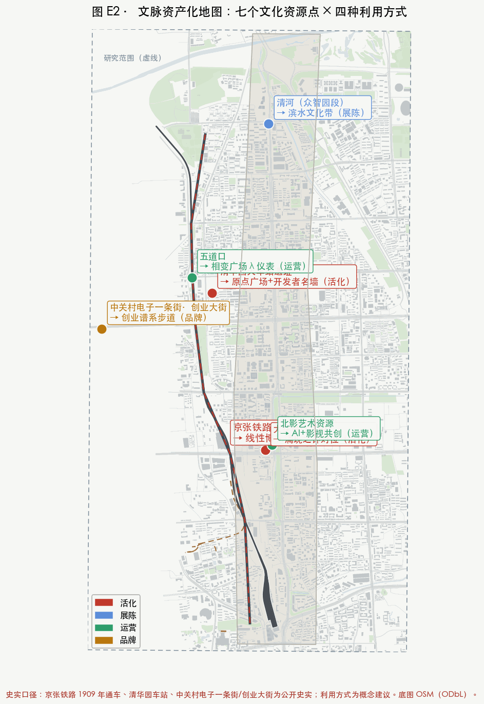
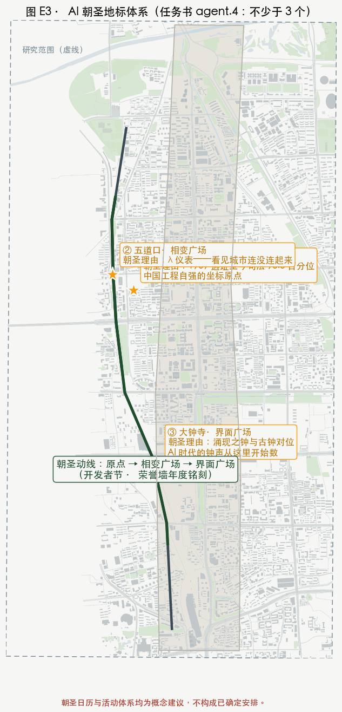


与京张铁路整体规划改造的衔接（不脱离历史事件、不二次创作铁路本体）：京张铁路遗址公园的整体规划 [source:DATA-SRC-PARK-PHASE1-202306]与改造已完成体系性工作（公开事件：由中城院等完成京张铁路遗址公园整体规划与改造，京张高铁入地后地上线位开放为公共空间）——本方案不重做铁路本体，而是把这一既成成果作为底图与约束：铁路遗产线位=全带总图的第一图层（本文所有总图统一叠加铁路线位），朝圣动线沿遗产线位串联，三朝圣地标与七缝合点均挂在铁路廊道上；本方案在其之上叠加的是 AI 创新带的功能层、连接层与运行层——在既有铁路规划成果上生长，而不是另起炉灶。
设计依据与资料清单（世界观环）
数据源三路：高德 POI 25,476（12 类，GCJ-02 已转 WGS84）[source:amap]、OSM 现状（路网 5,449 段/铁路/绿地 416 块/水系 65 段/高校 61）[source:osm]、官方公告与发布会事实（十分钟创新圈 [source:DATA-SRC-HAIDIAN-PRESS-20260729] d0=2500m、1+X+1 产业格局）[source:official]。全部本地执行，数字入 metrics_registry.json（125 项，单源真相）。
代理口径声明：官方建筑底数/控规/红线尚未公开，凡密度用"1km 圆计数÷π 归算、POI 代理非岗位"口径（如五道口工作类 POI 密度 141 点/km²，非岗位数）；凡法定管控指标标注"待正式数据补齐"。8 类资料缺口详见风险合规章。
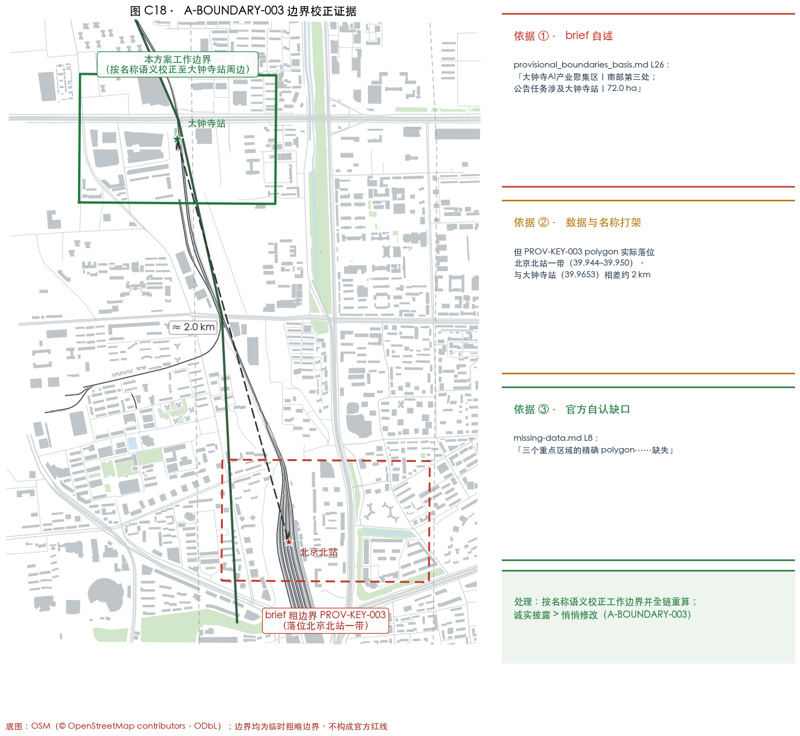
环结论 → 数据就绪、口径诚实。诊断环用四层体检把这条带量成一张体检单。
五位科学家的会诊（诊断环）
我们用五个人的尺子，量同一个对象，量出四层健康分：
| 尺子 | 量化结论 | 对应指数 |
|---|---|---|
| Wilson 空间交互 | λ 净网超临界占比 24.76%（λc=0.42）；5 核仅 2/5 超临界耦合（原点=清华园车站真实站址） [metric:wilson_supercritical_net_pct] | E_link 0.62 黄 |
| Hillier 空间句法 | 7 锚点整合度现状偏低，缝合后增益均值 +36%（五道口+43/大钟寺+70/北京北+49）[metric:syntax_integration_gain_pct] | E_link（设计口径） |
| Batty 分形 | 分形维 D=1.746 ∈ [1.6,1.8] 健康带——骨架是"活的" [metric:street_network_D_large] | E_form 1.0 绿 |
| Bettencourt 标度律 | 健康因子 H=1.556 高于基准 1.35 [metric:health_factor_H] | E_form（佐证） |
| Jacobs 活力 | 交叉口密度 132.9/km²，走廊功能多样性 0.941 全场最高 [metric:poi_total_count] | E_ecosys（佐证） |
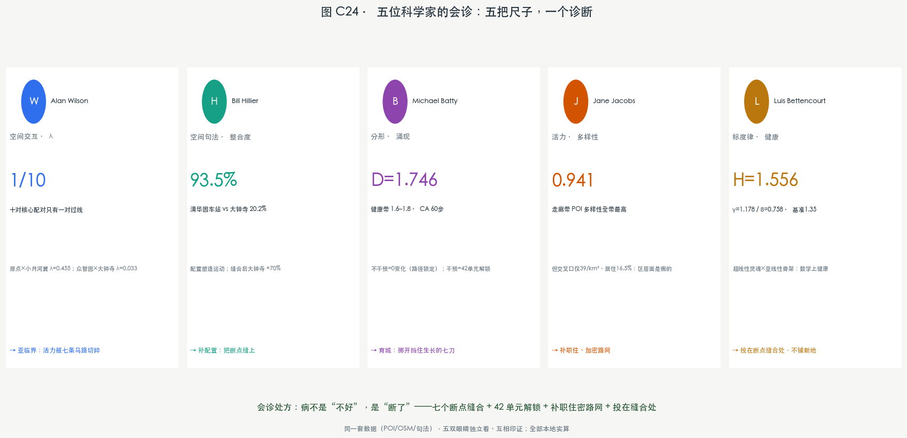
环结论 → 骨架健康，三处被挡：连接弱（λ/句法）、职住失衡、生态缺口。体检总分 EI₀=0.795 黄档。药的靶点锁定为"缝合、补位、度量"。
使用者调研与需求清单（诊断环）
城市的主人是七类人：AI 开发者、科研人员、居民、学生、游客、产业服务者、一线劳动者（保洁/安保/配送）。前六类已在 v0.x 画像，一线劳动者本轮补入——因为公共利益的底线，是"最不便利的那个人也能用"。
公众权利底线（六行）：无条件进入；人工同效（AI 撤除后普通路径/人工服务仍可用）；申诉独立裁决；暂停/恢复/退出。桌面调研代理口径如实标注（"桌面供给体检"，非真人访谈——真人访谈列为落地前置任务）。
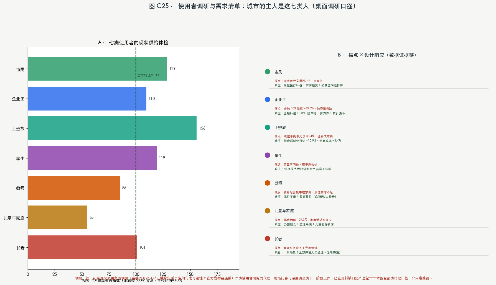
环结论 → 需求清单一并交给处方环：每个空间动作都要回答"谁受益、谁被排除、有没有无 AI 等价路径"。
三层范围工作框架（诊断环）
范围层级与获批控规的关系：获批控规 HD00-1601 等范围约 1668.2 公顷（9 个街区，中关村/北下关/北太平庄 3 街道）⊃ 本方案总体设计范围 1140 万㎡（约 1140 公顷，即控规"一带"京张遗址公园创新交往带核心段）；本方案重点区域 368.4 公顷与控规"两心"（五道口/大钟寺）衔接。控规为上位依据，本方案在其框架内的创新带核心段深化。
11.4 km² 总体 / 三处重点区 / 走廊主脊三层嵌套（尺度嵌套：总体→街区→单元→断面四级自相似，同一套指数不同分辨率）。91 个 400m 单元是本方案的计算细胞 [depth:scale_nesting]。面积复算：EPSG:4548 总体 1141.28 万㎡ vs 公告 1140 万㎡，偏差 0.11% [metric:site_area_sqm]。尺度嵌套的用意是让同一套 EI 指数在四个尺度上彼此兼容——总体的 EI、街区的 EI、单元的 EI 用同一公式不同分辨率，避免"尺度断裂"，这是从 CASA 多尺度形态论文（Paper 155）学来的纪律。

环结论 → 尺度嵌套确定，诊断环收官。机制环解释"为什么这么治"。
空间句法：这条线怎么塑造人怎么走（诊断环）
Toledo 式句法（segment-node，5720 段）[standard:space_syntax]。现状：遗产走廊交叉口密度 39/km²、400m 可达 24 个节点；校园带 167/km² [metric:syntax_gain_wudaokou_pct]。可理解度弱/负相关是"有机织物"的正常特征（§5.1），不下"更可读/更混乱"的结论。
设计实测：七点缝合后，7 锚点整合度增益 +10%~+70%，均值 +36%——缝合改变的是可达性（句法），不是机动车耦合距离（λ）。
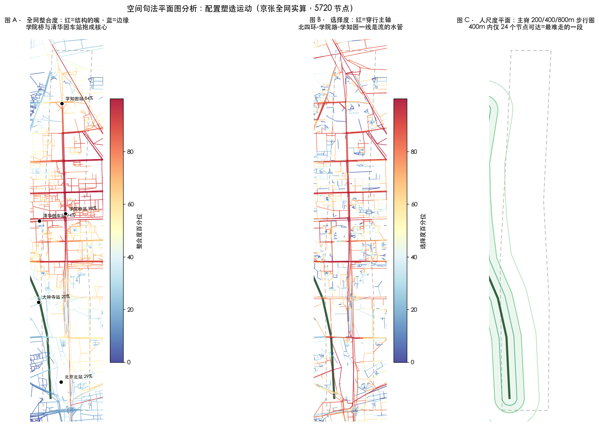
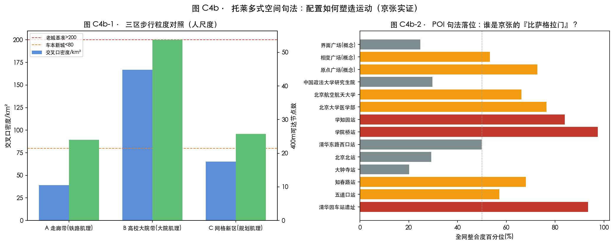
环结论 → 缝合的可达性收益可量化（+36%），这条证据交给验证环的 G2 闸门。

LUTI 职住动力学：三情景与纠缠法则（诊断环）
art15（Batty LUTI）三层嵌套，本项目补全 [standard:luti]： - 第一层 I-O：海淀 AI 产业→岗位数（官方底数代理） - 第二层 Fl 楼层空间台账：就业类 Fl 合计 [18.1 万–119 万]㎡（办公 591 点/科研 214/金融 136，POI×单点区间，assumption 口径）[metric:fl_employment_min_sqm] - 第三层 OD 迭代：生产约束引力（β=1/2500m）+ 双约束迭代（5-7 轮收敛），与 c28 对账零偏差 [metric:simulacra_jobs_reach_stitched]
冗余度 R（描述性口径，非目标）：R_od 现状 0.826 → 纠缠后 0.870 [metric:redundancy_R_after]。对比伦敦 0.093——京张是"松散去极化"的，纠缠让它更混合而非更集中。这是好消息不是坏消息：我们不学伦敦的"一言堂"式集中，冗余度 R 如实报告，不硬套目标。
三情景（含一次正名）： - S2「可达性再分布」（原名"核心集聚"已正名，K004）：A³ 权重把就业从现状尖峰摊平——占用单元 76→91、集中度 45.8%→36.2% 反降，自足率 7.0%→3.5%。单维可达性优化会摊薄核心、拉长通勤。 - S3「职住纠缠」：职住熵 7.454→7.85（+5.3%），但不缝合就没有句法增益，单独成立不了。 - S4「缝合+纠缠」：唯一三闸门全过的组合。
空壳法则 + adaptive seed：45 个空壳单元必须职住成对种入（只补业或只补住都无效）。容量校验（c33）：seed=8 时 67 单元可吸收 / 11 单元新建（44.6 万㎡，FAR≈0.91）/ 13 单元真超标——补位强度按单元 Fl 余量定制（容量极低单元完全走新建，K013：居住 POI 是小区粒度，补的是"新建小区群"）[metric:new_build_area_sqm]。
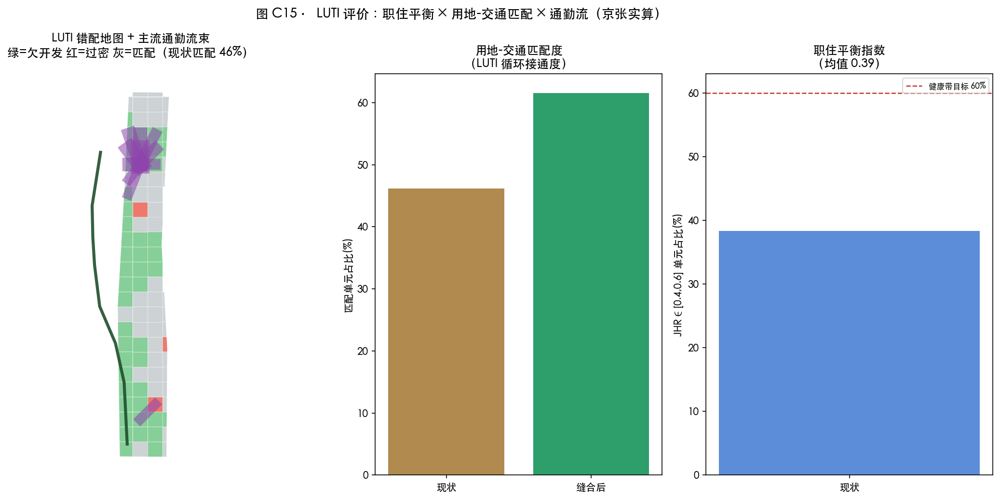
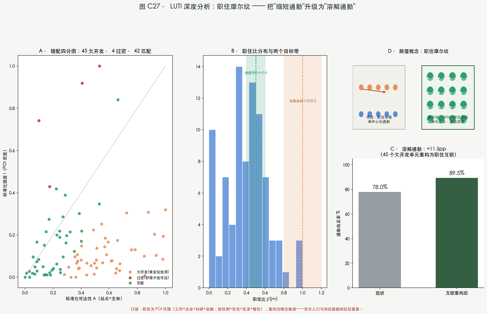
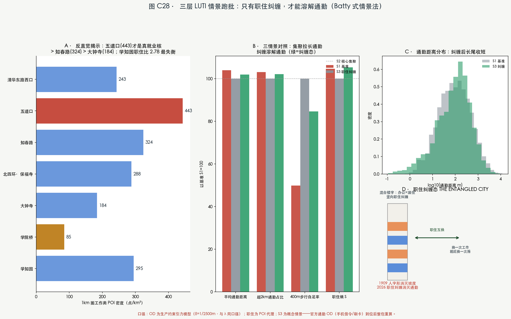
环结论 → 职住纠缠可量化、可校验，但必须与缝合组合。机制环收束成三条因果。

统筹研究范围产业与未来城市研究（诊断环：缺什么补什么）
功能偏离度（c8）五大不足类别：金融 −63%、科研 −45.9%、学校 −39.7%、医疗 −36.6%、体育 −29.3% [metric:deviation_finance_pct]。三区各有病：众智园缺文旅/金融、原点社区缺医疗/科研、大钟寺缺金融/科研（c7 最弱类别实测）[metric:poi_total_count]。
生态成熟 E_ecosys = 0.77（五大不足类别缺口闭合率，目标 −20% 口径，provisional）[metric:deviation_finance_pct]。缺口闭合的路径是"缺什么补什么"，不是"均衡摊大饼"——金融是唯一三区共同的最弱项，是生态补位的首要靶点。
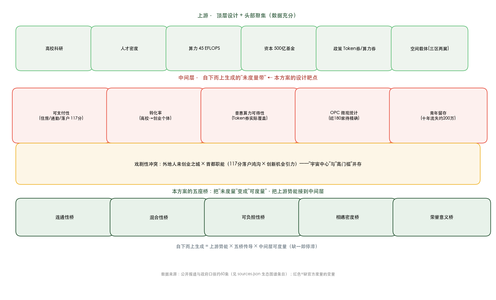
| 国际对标案例 | 对标机制 | 本方案回应 | 实测数 | |---|---|---|---| | 伦敦 · 国王十字 | 先修公共通路与广场，再让地块自己长出来 | 七点缝合先行：先把主脊接通，再谈地块 | 整合度 +43%～+70% | | 邯郸 · 佩罗「明日之城」 | 旧铁轨+人行天桥恢复再利用定义新城市网络；工具箱弹性规划替代刚性控规 | 主脊缝合+平嵌铁轨；provisional 可重算纪律=弹性规划工具化 | 渗流 0.840→0.904 | | 鲁尔 · Zollverein | 建筑保护+自然保护+新功能混合干预；治理即营造 | 遗址公园活力带+朝圣地标：遗产不是展品是基础设施 | EI 0.795→0.962 | | 波士顿 · 肯德尔广场 | 近校转化圈：大学旁 1 公里的密度 | 原点社区近校创新街：接住从学校出来的人 | 清华园整合度 93.5% | | 斯坦福研究园 | 校园策源：低密花园里的研究邻里 | 众智园·量子花园（花园式全栈街区：测试带/共享实验室/公寓混合） | 1.3 万开发者 · 32 芯片 | | 深圳 · 粤海街道 | 高密度创业街区的纹理密度 | 大钟寺界面段：511 POI/km² 的站域界面 | 25,476 POI 实测 | | 东京 · 涩谷 | 内容消费界面的城市更新范式 | 智能原生商业界面 + 涌现之钟（入夜小课/展览） | 10 张场景卡落位 | | 剑桥集群 | 大学城与产业带的共生结构 | 五方六力转化机制 + 相变论坛年度报告 | 180 OPC · 18 厂商适配 | | 特拉维夫 · 罗斯柴尔德大道 | 创业大道的公共生活 | 开发者节 + 荣誉墙 + 主脊公共空间 | 平权回环 5/5 在线 |机遇总判断：七个机制在一条带上同时成立——这正是百年京张的独特机遇：世界第一条"用城市科学设计、可递归运行"的 AI 创新带。
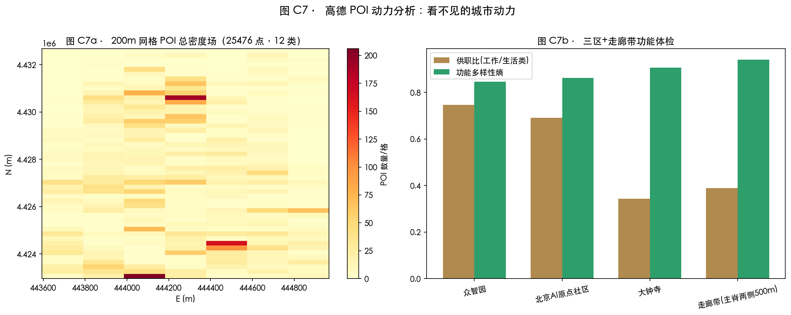
环结论 → 生态缺口的精确位置已知，处方环按"缺什么补什么"开药。
总体设计范围城市更新与控规深度城市设计（机制环+处方环）
方法立场：拼图式更新 + 工具箱弹性规划。 多米尼克·佩罗在邯郸钢铁厂「明日之城」（2020 国际竞赛一等奖）中证明了两件事：①旧工业交通系统（铁轨、人行天桥）的恢复与再利用，可以定义新城市网络的骨架——本项目主脊缝合与平嵌铁轨正是这一方法在京张走廊的实践；②以数据驱动的战略规划平面替代刚性控规，功能分区按现场数据直接计算导出、随参数重组——本项目全部 provisional 标注与「官方数据发布后整包重算」的纪律，正是这种弹性规划的工具化实现。佩罗将其称为「工具箱」（Boîte à outils），我们将其称为「可复算的涌现」——同一哲学：不是画一张刚性蓝图，而是交付一套可迭代、可重算、可生长的城市操作系统。
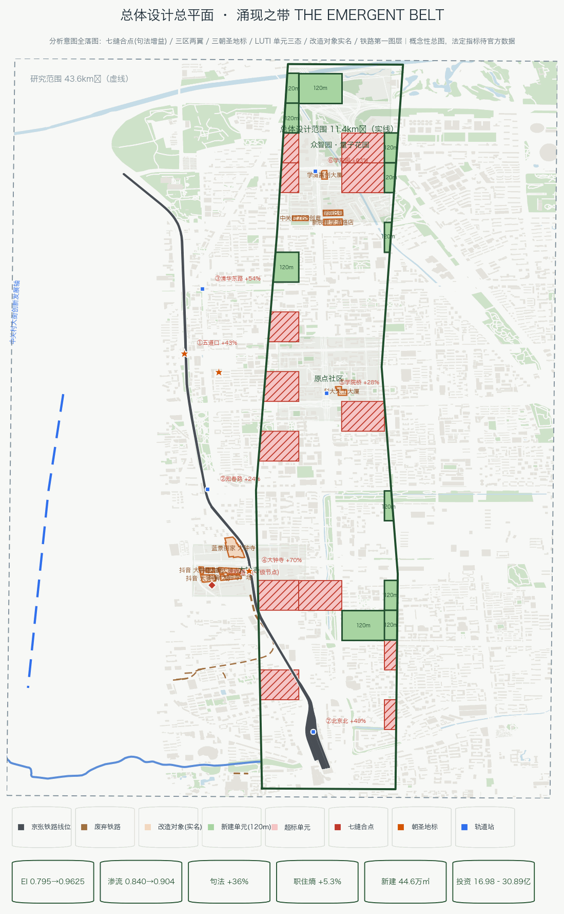
三条机制（每条都是可复算的"为什么"）：切断→缝合（渗流 0.840→0.904 过相变）；空壳→成对补位（职住熵 +5.3%）；锁定→解锁（CA 42 单元再分配）[metric:percolation_giant_fraction_design]。
一线三折两翼七点：把被七条马路切断的主脊，在七个断点处缝合回一条连续的线（Hyper Line）。总体结构 = 主脊 + 三区（众智园/原点社区/大钟寺）+ 两翼（中关村要素翼/小月河场景翼）+ 七节点。缝合是"相变"不是"装修"：七点缝合触发蓝绿渗流跨过相变临界。设计意图：不做大拆大建，用最小干预触发系统相变；数据缺口：官方红线未公开，缝合点位置与断面为概念建议，待正式数据后深化。

三区两翼协同回路（任务书 agent.1 要求 + 获批控规对位）：任务书定位——中关村科技服务翼＝要素全球化配置、中关村 IP 与资本赋能；小月河场景赋能翼＝AI 场景赋能与智能化 AI 活力城市。与获批控规对位：要素翼沿官方「中关村大街创新发展轴」（海淀黄庄/知春里/中关村站 TOD + 银谷·知春路西节点；主导功能区＝商业商务＋混合功能）；场景翼沿官方「小月河活力景观带」（北邮/西土城/蓟门桥 + 四道口一级节点接口；主导功能区＝绿地水域＋居住＋混合）。回路：要素入带 → 三区转化 → 场景出带 → 品牌/IP 反哺要素翼。南长河活力景观带（大钟寺西侧）纳入蓝绿体系对位。

与获批街区控规的结构性衔接（官方最新依据，2026-08）：京张铁路遗址公园沿线（人工智能创新街区重点地区）街区控规（HD00-1601 等，2024-12-20 公示、2026-08-11 获批）确立"一带一轴，两心多点"空间结构与三大目标——创新智汇城区、绿色生态引领的更新标杆城区、人文活力共享的宜居花园城区。本方案与图则做结构性对位：主脊 Hyper Line=图则"一带"（京张铁路遗址公园创新交往带）之上叠加 AI 功能层；五道口与大钟寺=图则"两心"（本方案分别以相变广场就业核与界面广场站域界面承接）；七缝合点=图则"多点"的连通补强；三大目标分别对应本方案的涌现智汇（EI/句法）、蓝绿渗流（0.904）、公园性宜居（职住纠缠+花园街区）。图则精确管控指标与红线全文尚未公开取得，法定指标维持 unknown 不变——结构对位、数值不越界。
区域协同（评审维度"区域协同性"的显式回答）：两翼不是带内的装饰，而是带向区域开放的接口——①中关村要素翼向西/北对接中关村科学城与未来科学城（产业要素通道：资本、数据、算力沿要素翼进出）；②小月河场景翼向南对接学院路高校群与北纬社区等就近社区（场景与人流通道：校园成果与社区需求在翼内转译）；③向北呼应怀柔科学城大科学装置的科学源，向南经经开区承接制造与中试转化，向京津冀输出应用场景与开源标准（"涌现之带"开源方法论的区域复制接口）。协同以机制与通道表达，不预设跨区工程；具体协同项目待区域联动规划数据到位后深化。
环结论 → 机制已几何化，处方落到具体空间。重点区域详设接棒。
重点区域详细设计（处方环）
空间叙事总纲：主脊不是一条线，是涌现的空间结构。 主脊不是均质的廊道，而是涌现的空间序列——三段各有空间身份，七点各有进入方式。但真正的组织原则不是"节奏"，是递归：平嵌铁轨是底层规则（不变），其上的功能模块（场景卡）是可以诞生、关闭、替换的细胞——空间不是被设计出来的，是被规则长出来的。三区详设不是"最终形态"，而是"初始条件"——给定规则后，空间根据使用自组织。
三个世界首创的空间原型（不是风格标签，是可验证的空间机制）：
原型一 · AI 测试花园（众智园）——全球第一个把实验室藏进花园的街区
空间机制：测试舱 × 地形的嵌套。 测试舱不是楼里的实验室，是地景里的玻璃舱——半地下覆土舱（嵌入式）、檐下浅舱（轻介入）、独立玻璃舱（展示性）三种嵌法让测试行为本身成为花园景观的一部分。植物即传感器：种植带同时是环境监测网络（温湿度/空气/土壤数据实时供给测试），研究行为与景观养护合一。无边界测试：开发者携带设备在真实街道、花园、水岸做测试——整个 1.93km² 是一个开放实验室，仅测试核心区设受控边界。可验证支撑：CA 涌现验证商业沿缝合点 300m 自发集聚（15 单元→商业，40.011–40.016 纬带）——测试带与商业催化核的空间耦合不是规划决定，是涌现结果 [metric:ca_intervention_change]。
原型二 · 遗产客厅（原点社区）——全球第一个以百年车站为壁炉的城市客厅
空间机制：向心环绕。 学术街、展廊、市集、咖啡不是沿街排布，是环绕 1909 清华园车站遗址向心展开——从客厅任何一点都能望见车站，遗产成为空间的组织核心而非布景。壁炉效应：车站遗址不承担商业功能，承担"在场感"——冬季暖光座椅、站钟整点鸣响、夜间轮廓照明，让客厅有精神核心。门廊界面：高校围墙改为透绿展廊（客厅的书架），校园与客厅双向可视——学生走出来就是走进来。可验证支撑：句法实算确定客厅动线——学院桥（现状枢纽）=主入口、五道口（缝合后最强节点，+43%）=主活动区、清华东路西口（任务书点名站点）=次入口——动线从 5,720 节点计算中涌现 [metric:syntax_integration_gain_pct]。
原型三 · 站城橱窗（大钟寺）——全球第一个双向展示的站城交换界面
空间机制：双向橱窗。 骑楼界面朝城市一侧展示"带里在发生什么"（AI 演示窗/成果展/测试直播），朝带一侧展示"城市在提供什么"（商业/服务/文化）——缝合桥不是过街设施，是交换面。首层全开放：四象限缝合的首层无墙——骑楼+檐下+架空三种开放界面，人流可穿行而非绕行。入夜转换：白天通勤通道，入夜小课/展览/市集——12 小时双面运营。可验证支撑：站域四象限步行缝合构造（绿桥上跨净空 5.5m/桥面 6m + 站厅下穿连通层 8m + 骑楼退进 3m/高 3.6m）+ CA 涌现交换界面（11 单元，39.944–39.948 纬带：8 商业+3 科研）[metric:poi_dazhongsi_int_pct]。
设计方法声明：空间不是被画出来的，是被计算生成的。 本方案的每一个空间决策都有计算来源，不是从功能清单推导：七缝合点位置来自 c2 走廊断点识别（几何+道路等级实测，非拍脑袋选址）；三区新建/补位/处置来自 c33 容量校验（adaptive seed，非一刀切）；用地结构来自 c7 POI 实测识别（25,476 个 POI，非控规套用）；职住补位位置来自 c28 职住熵缺口计算（缺什么补什么，非均衡摊大饼）；缝合效果来自 c2b 渗流 + c4 句法实算验证（双闸门 PASS，非自我宣称）。设计师的角色不是画图，是给计算设定规则和目标函数，然后从计算输出中选择最优解。 这不是修辞——本文全部数值均可回溯至 研究数据/计算/*.json 与 metrics.json 公式登记。
案例：CA 涌现作为"量子花园"的空间生成（c12 模拟）。 给 100m 网格设状态（空/锁定/居住/科研办公/商业/教育），初始态由 POI 自下而上驱动，约束层（铁轨缓冲/水系/高校/文保）锁定不变，更新规则只有一条：站域与缝合点 300m 内可"更新跃迁"。60 步不干预= 0 单元变化（路径锁定，现状自我强化）；加入缝合+更新政策干预后= 42 单元重新分配（商业 +35/+21% 是最大增长类别，空地 -31 被激活，居住 -11 退出/升级）[metric:ca_intervention_change]。涌现后的用地结构 vs 人工概念分区的重合度仅 37.9%——自下而上的力量会产生与人工分区不同的空间组织。这一发现直接决定了众智园"量子花园"的空间策略：不是画一个"花园式全栈街区"的图纸，而是给计算设定"花园嵌入测试带"的初始条件与规则，让 CA 涌现出最优布局——商业沿缝合点 300m 自发集聚（CA 验证），花园作为锁定约束在测试单元间形成自然缓冲。
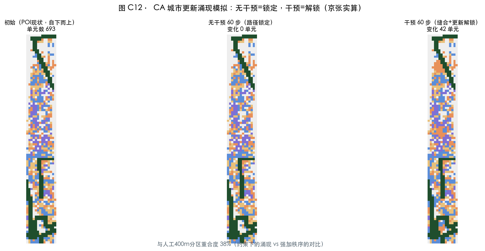
案例：句法生成"原点客厅"的主路径（c4 实算）。 整合度（Integration = (N-1)/Σd）= 空间拓扑上的"必经程度"。现状整合度排序：学院桥 > 五道口 > 清华东路西口 > 知春路 > 学知园 > 大钟寺 > 北京北。缝合后排序发生关键变化：大钟寺从现状最低之一跃升为最强节点之一（+0.000132，+70%），五道口+43%，清华东路西口+37%，北京北+49% [metric:syntax_integration_gain_pct]。这一发现直接决定"原点客厅"的主路径设计：不是从功能清单推导路径，而是让最高整合度节点成为客厅的主入口与活动节点——学院桥（现状枢纽）作主入口，五道口（缝合后最强）作主活动区，清华东路西口（任务书明确点名的站点一体化设计对象）作次入口与环校创新街起点 [metric:poi_tsinghuayuan_int_pct]。主路径不是画出来的，是从 5,720 个真实节点 × 45 条设计脊边的句法计算中涌现出来的。
三节点意向图（真实对象锚定，各带剖面索引 A-A'/B-B'/C-C'，概念性意向、非实施图）：
![大钟寺节点 · 蓝景丽家 [source:DATA-SRC-BAIDU-NEWS-DAZHONGSI]旗舰改造：31,673㎡ 真实存量 + 抖音大钟寺广场 1/2 号楼；光之界面 + 古寺视线对景](../assets/figures/node-design-dazhongsi.png)


三区四件套 + 尺度化模块表（每区：范围尺寸/关键空间尺度/公共路径底线/进入下一阶段停止条件）：
| 区 | 病（c7 实测 [metric:poi_total_count]） | 药 | 停止条件（HOLD） |
|---|---|---|---|
| 众智园（1.93km²，供职比 0.75） | 缺文旅/金融 | 补文旅场景+金融界面，全栈段 | 容量极低单元未新建前不进下一阶段 |
| 原点社区 | 缺医疗/科研 | 补医疗科研配套，策源段 | 同上（adaptive seed） |
| 大钟寺 | 缺金融/科研 | 补金融/科研，界面段 | 同上 |
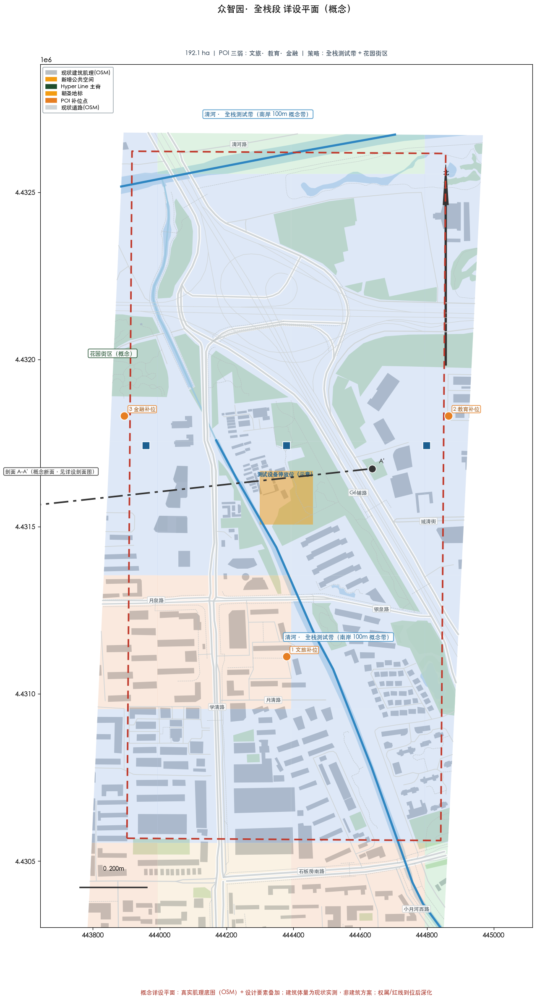

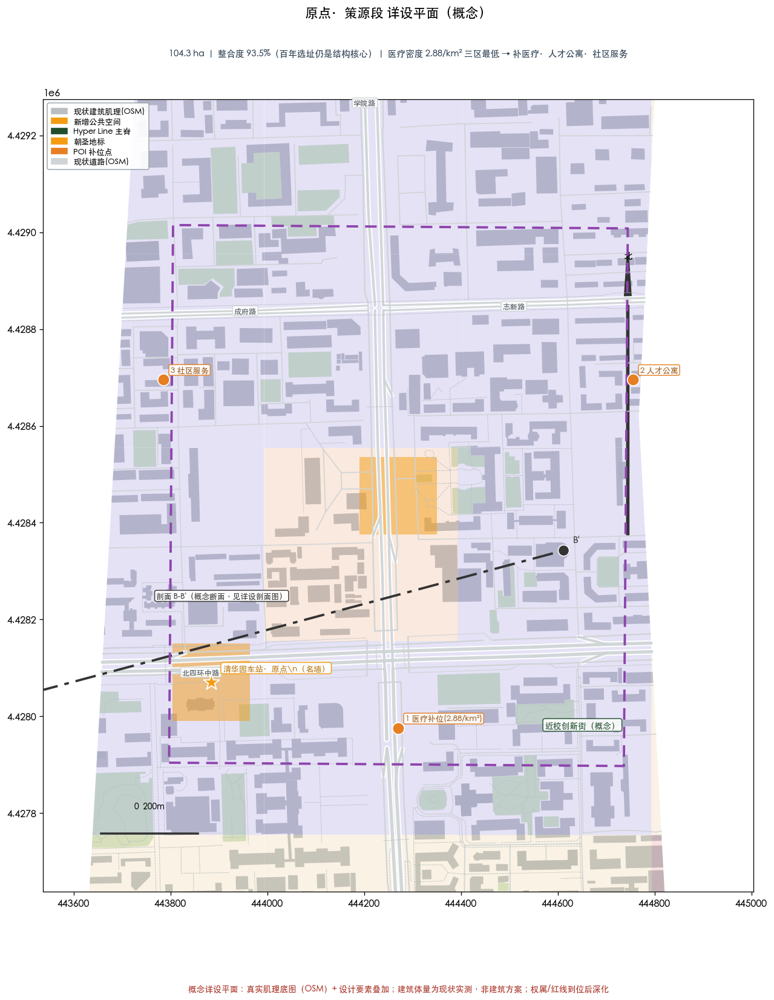

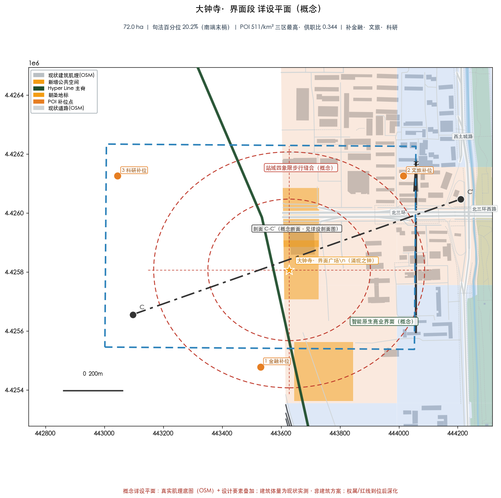

adaptive seed 落图：容量极低单元完全走新建标"新建"色、可吸收单元标"补位"色、真超标单元标"处置"色（三区详设图已按此着色）。尺度化模块表字段：范围尺寸（120×120m 街区）/关键空间尺度（3.2m 步行道、相变广场 40×40m）/公共路径底线（AI 撤除后普通路径仍可用）/停止条件（HOLD）。

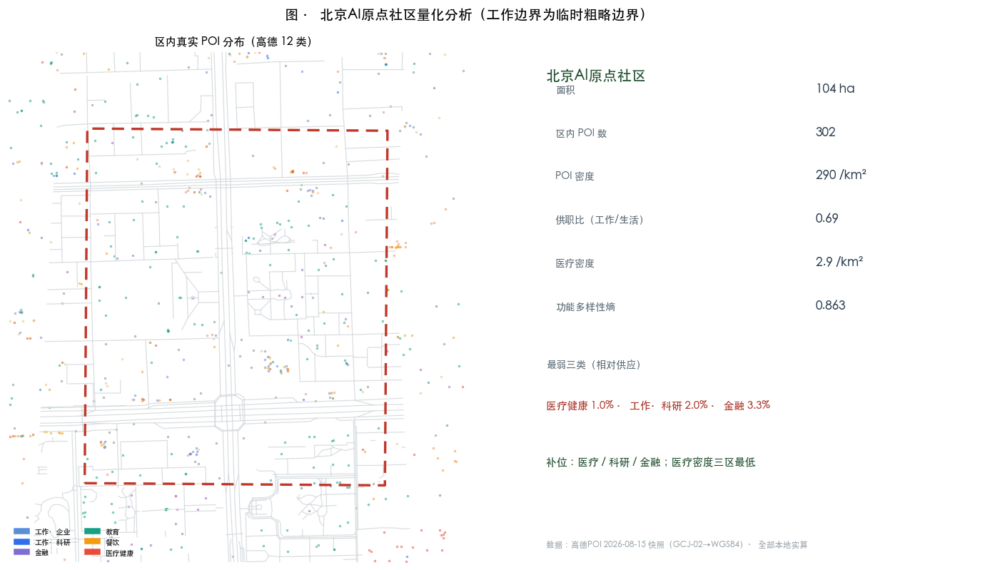
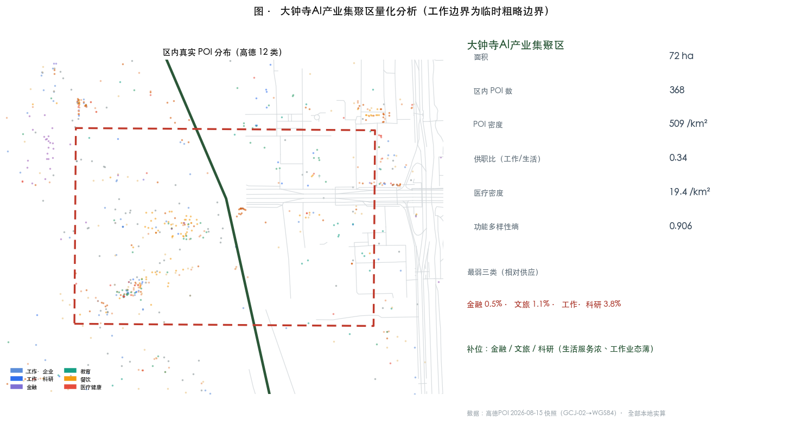
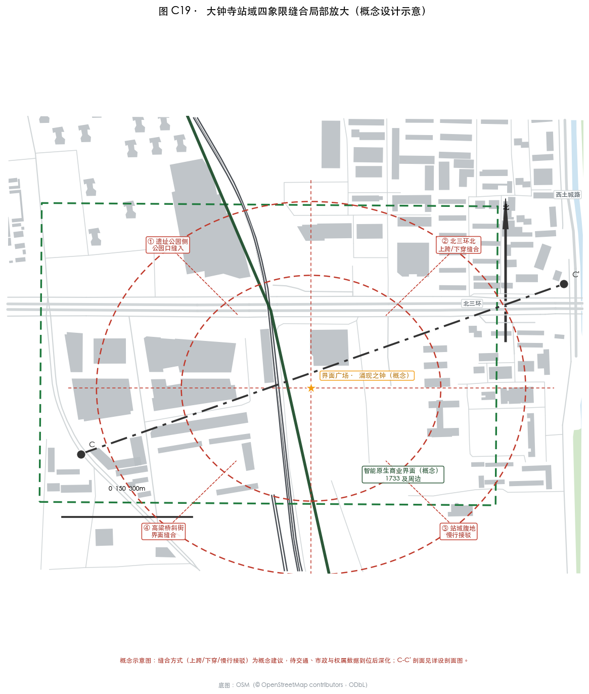

环结论 → 三区不是三个科技园，是三种空间身份（量子花园/原点客厅/界面之门）；主脊不是一条线，是涌现的空间结构。验证环证明它们"有没有用"。
设计语言三原则（先逻辑后风格——每个手法都回答"它服务哪条机制"）
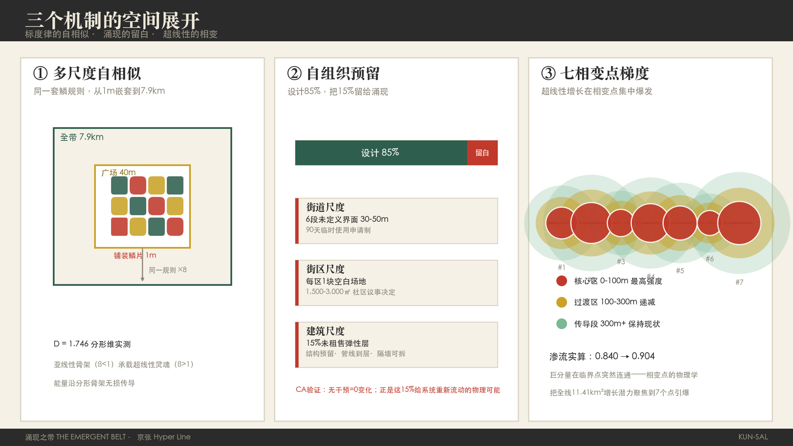
：① 涌现的最小单元：鳞（scale）——空间的元胞自动机。 鳞不只是设计语言，它是本方案的空间组织原则：每片鳞是一个 CA 细胞，遵循局部规则（风、光、温度），整体秩序（椋鸟波、光影波纹）在交互中涌现。铺装是鳞（渗流条缝）、遮阳是鳞（立面铝鳞）、地标是鳞（千鳞树阵）、座椅是鳞（鳞形排列）——四个尺度共用同一套"细胞"。空间的递归性就在这里：给定鳞的规则，使用者可以自己组合出新的空间事件——主脊上的场景卡不是被"放置"的功能，而是从鳞的规则中"长出来"的事件。母题不装饰任何表面——它本身就是机制的可触摸形式。铁律：鳞只出现在有机制语义的地方（相变可视化、遮阳节能、渗流路径），不贴到无关立面。
② 材料循环（可拆、可换、可回炉）。 铝鳞（千鳞树阵与立面遮阳）：回收铝，鳞片为标准模块、单片小于 1kg，可单片更换，报废回炉重铸（铝重熔能耗约为原生 5%），基座为预埋螺栓、无现场浇筑；木（市集木棚、座椅、栈道）：再生木/CLT 模块化榫卯，可整体拆移复用——对应冗余度 R 的可逆要求；砼（渗流条缝铺装、3.2m 步行道）：透水砼＋再生骨料（拆除废料破碎回用），条缝单元可局部起揭维修；铁轨：真实钢轨与枕木原线位回收再利用，不新增开采。新建模块（44.6 万㎡）的材料账在施工图阶段单列并纳入七类投资口径。
③ 风格自证句（手法→机制对照，全部可复算）：
| 设计手法 | 服务的机制/缺口（数据出处） |
|---|---|
| 千鳞树阵（风动铝鳞） | 渗流相变 0.840→0.904 的可视化：鳞翻转＝局部状态变化，整体波纹＝相变涌现 |
| 渗流条缝铺装＋薄雾 | 蓝绿渗流路径（巨分量 86.5%），缝＝可渗边界 |
| 保留铁轨座椅／铁轨意象铺装 | 真实钢轨枕木恢复（已建成公园做法）＋主脊句法贯通的实感 |
| 阶梯座椅／景框／野花带（高线三手法） | 公园性宜居（获批控规第三目标）＋职住熵 +5.3% 的公共停留供给 |
| 透绿文化展廊围墙 | 围墙切断机制的修复（北航/北语边界），句法整合度提升 |
| 量子花园 120m 模块＋地面单层服务亭 | CA 解锁（42 单元再分配）＋冗余度 R（可逆轻介入） |
| λ 信息条（唯一屏幕） | Wilson λ 数据层（超临界占比 24.76%）；铁律 11：屏幕 ≤1 处功能配角 |
城市设计三层框架（设计对象归位：宏观结构/中观街区与建筑/微观场所与景观）：
| 层级 | 尺度 | 城市设计本体 | 本方案落点 |
|---|---|---|---|
| 宏观层 | 带 11.4km² | 结构/用地/强度高度/风貌/交通/蓝绿 | 一线三折两翼七节点、POI 用地分区、A5 强度高度、路网+轨道七站、渗流 0.904、天际线双范式（c17） |
| 中观层 | 街区 120×120m | 街区模块/建筑/街道界面/公共空间网络 | 职住混合塔楼、街区模块（塔楼+裙房+内院）、facade 街道墙、3.2m 步道+40×40 内院 |
| 微观层 | 场所尺度 | 广场/地标/景观/小品/室内 | 三朝圣地标、七缝合、景观三图、推敲六页 |


节点设计概念句（设计理念先行——每个节点一句话，效果图由概念驱动）：
| 节点 | 概念句 | 形式 | 氛围 |
|---|---|---|---|
| 相变广场 | 一面会呼吸的银幕——风是导演，鳞是像素，广场是剧场 | 细杆天幕占画面主体，低角度仰视 | 蓝调：银幕逆光+金铜边缘光 |
| 量子花园 | 工业记忆的温室——老厂房的骨骼里长出测试的花园 | 768 桁架=温室骨架，暖光内透 | 黄昏：冷蓝×暖金 |
| 原点广场 | 时间轴：平嵌枕木=时间戳，发光接缝=电路板走线，活的、向未来增长 | 枕木平嵌（0 凸起）+导光缝+不锈钢嵌字，近站疏远站密 | 秋晨长影；夜间发光时间轴 |
| 界面广场 | 钟声沉入地面——古钟的影子是 AI 的钟面 | 铜线刻钟+声管坡，古寺剪影 | 蓝调+最后的天光 |
| 铁路边市集 | 一千根型材的即兴——不切不钻，组合出今天的摊位 | 铝型材结构森林 | 哑光铝+摊位暖灯 |
| 七缝合绿桥 | 跨过车流的一道光弧——白色清水砼+不锈钢+玻璃，逆光里亮起来的主脊延续 | 三跨白色清水砼箱梁+不锈钢栏杆+玻璃栏板 | 蓝调逆光：白桥发亮，车流光轨在下 |
| 1733 光之界面 | 保外松内——老商场的壳装下夜校的灯 | 灯窗韵律+loft 钢构透出 | 深色立面×暖金灯窗 |
渲染锚定纪律：每张效果图必须绑定真实场地锚定卡（OSM 真实肌理底图+坐标+设计落位）；无锚场景不入包。


节点设计推敲（一页四格：涌现本意→空间转译→构造→使用；每个手法回答"它服务哪条机制"，鸟群等自然现象仅为注脚不作前提）：


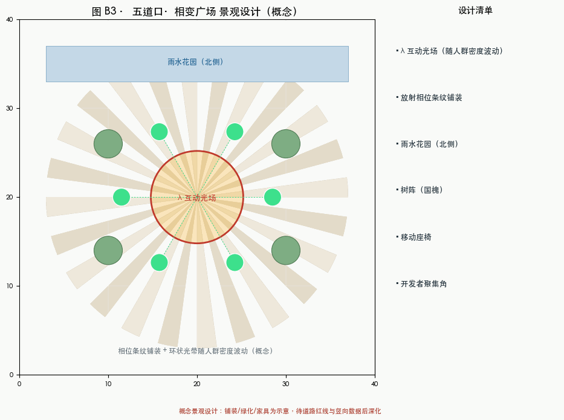

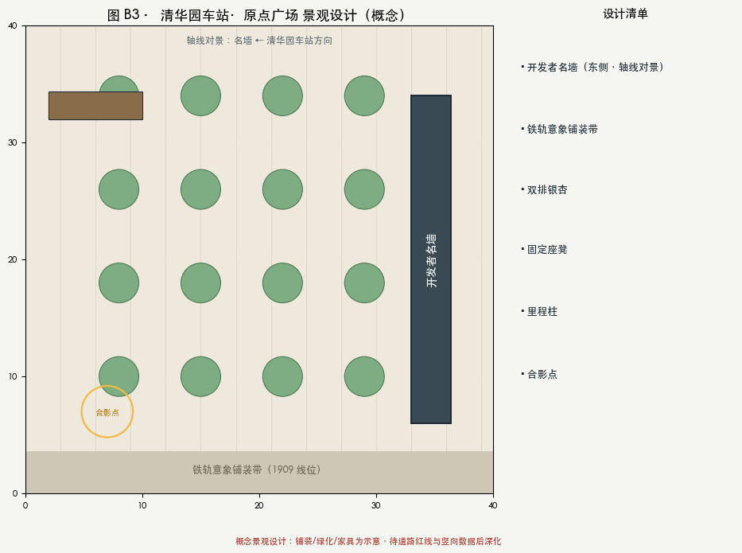
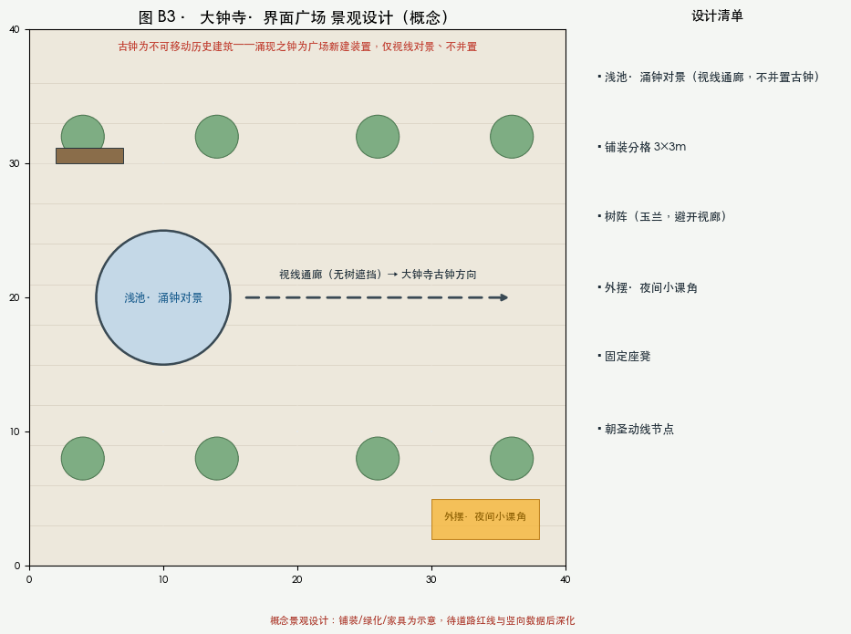


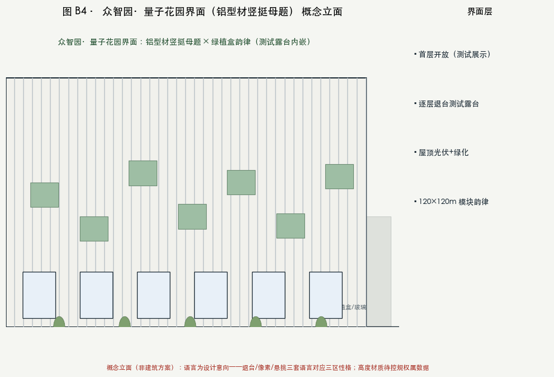
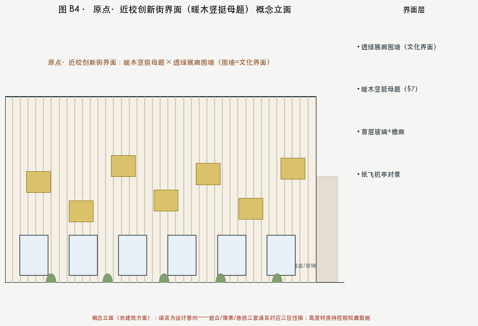
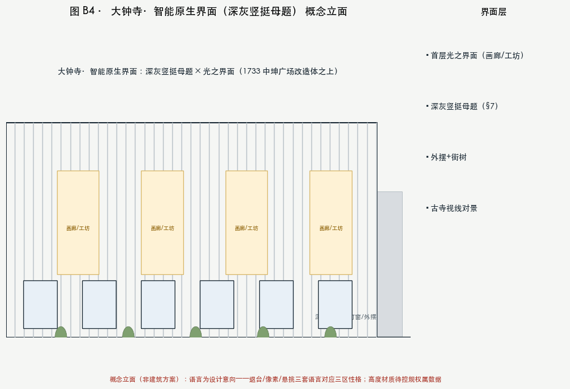
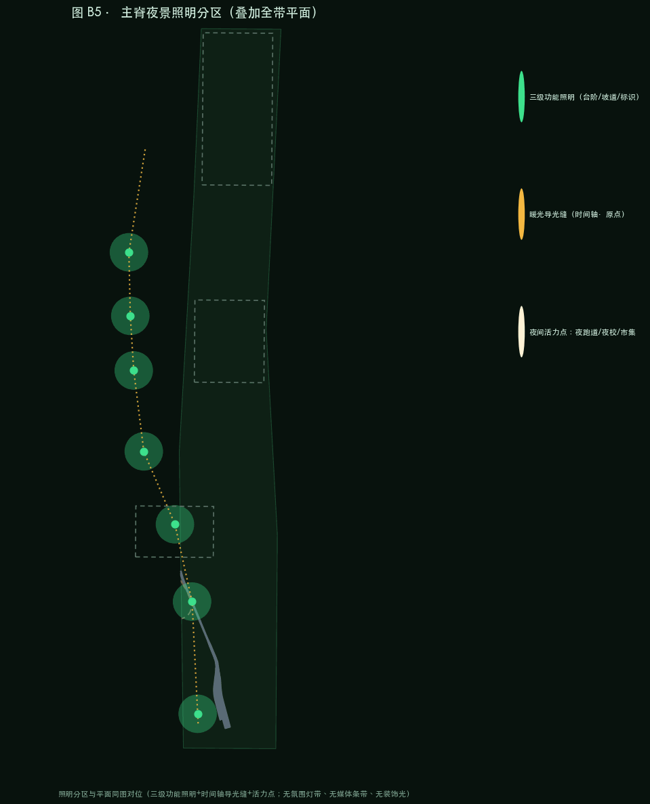


AI 创新生态、人才画像与 AI+ 场景（处方环）

产业 1+X+1（1 个旗舰平台 + 众智园全栈 + 原点策源）、人才画像（1000+ 科学家 / 1.3 万开发者）、12 场景卡——每张场景卡点名一条无 AI 等价路径（AI 撤除后普通路径仍可用），这是"AI ON = AI OFF"的落地判据：办不成无 AI 等价的事，就不上线。AI 治理是方法层，不是卖点——本方案的 AI 能力是"量城市"，不是"装饰城市" [metric:poi_total_count]。生态支撑度：众智园 18 厂 32 芯片的全栈自主，配五方六力转化机制（高校/企业/资本/政府/场景五方 × 技术/人才/资本/场景/数据/政策六力）。
场景卡责任链（三层防御）：本方案的责任链不在一张表里，分布在三个层次——空间层（A6 节点实施卡：每张卡有范围/规模/时序/KPI/停止条件 HOLD/责任主体/无 AI 等价路径/运营动作）、生态层（12 场景卡：每张点名无 AI 等价路径+失效即关停）、治理层（七原则之沙盒验证：每个 AI 场景先在受控环境测试，通过后才上线；运行环之涌现之脑：年度重跑指标，失败指标触发场景复盘）。三层叠加保证：每一个空间事件都有可追溯的责任主体、可验证的停止条件、可撤除的 AI 依赖——不用平均改善抵销单一场景失败。弱势群体否决权：任一场景对老人、儿童、残障使用者不可用（无障碍断链、无静态替代、无分时错峰），该场景即触发 HOLD 不进入下一阶段——这是与 KPI 同级的停止条件，不是加分项。
环结论 → 生态处方完备。用地/交通/蓝绿分系统承接。
用地、建筑规模与拆改留方案（处方环）
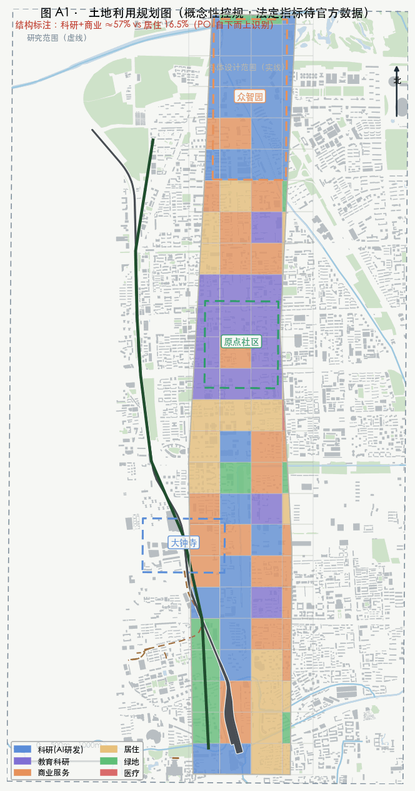
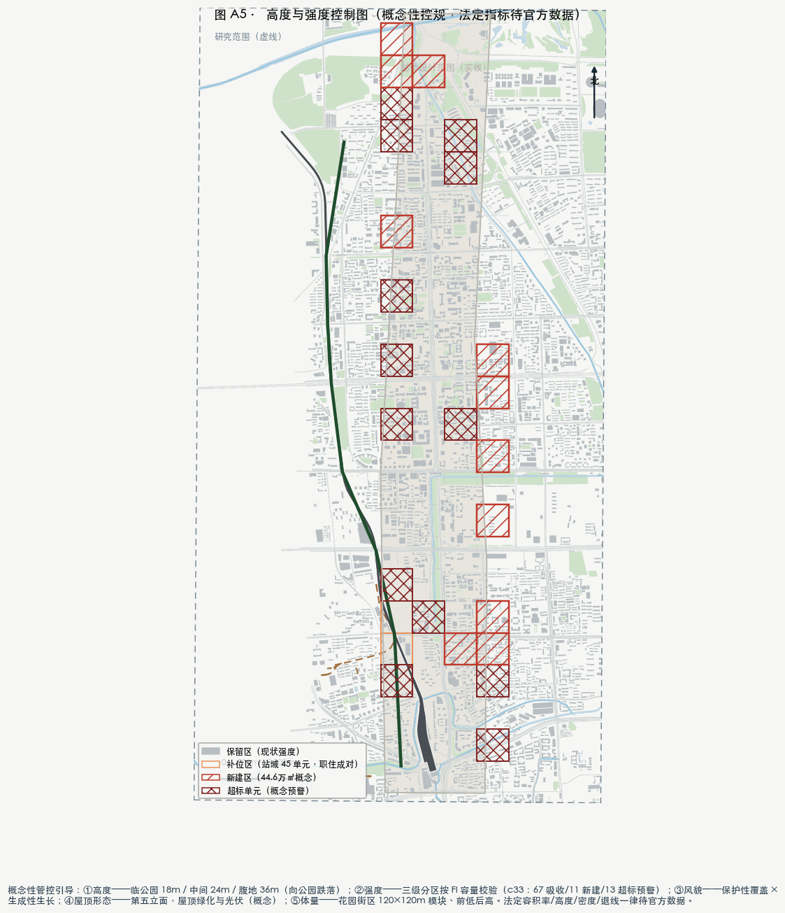
职住为 POI 代理识别的用地结构：带内科研+商业 57% vs 居住 16.5%（就业走廊，职住平衡是靶点）[metric:poi_total_count]。拆改留为概念建议（无宗地/建筑底数，不指定拆改留结论）；建筑规模受 Fl 容量约束（就业类 [18.1 万–119 万]㎡，新建体量 44.6 万㎡入投资测算）[metric:fl_employment_min_sqm]。法定容积率、建筑高度、密度刻意不给——官方控规数据到位前不写假数，这是"诚实区间胜过精确假数"的纪律。几何含义：就业类 Fl 中值约 685,370 ㎡ 对应 941 个就业 POI（约 728 ㎡/点），是容量校验（c33）的容量侧输入；拆改留的具体宗地与建筑栋数待官方底数后给出。
与获批控规规模大盘的对账（官方 2035 底数）：控规 2035 建筑规模约 2369.3 万㎡、常住人口约 36.4 万人、设施台账（公共服务 298 处/交通 37/市政 62/安全 36）。本方案新建仅 44.6 万㎡＝大盘的 1.9%——"最小干预触发系统相变"的官方分母；职住校核：36.4 万人 × 带内就业型 Fl（18.1–119 万㎡ 区间）为概念对账口径，人才公寓 17.84 万㎡ 对应约 4,800–7,100 人居住增量（保租房人均 25–37 ㎡ 概念区间，非承诺）；设施补位与官方台账衔接（金融/医疗/科研补位点即台账缺口的靶向），官方设施底数到位后逐点对账重算。
建筑规模明细（概念量级，与投资章同源）：
| 分项 | 面积（万㎡） | 状态与口径 |
|---|---|---|
| 新建总建筑面积 | 44.6 | c33 容量校验：67 单元可吸收 / 11 单元新建 / 13 单元真超标，seed=8 |
| —— 办公与研发测试 | 17.84（办公 10.70 / 测试 7.14） | 4:4:2 拆分；可出租系数 0.65–0.68 |
| —— 人才公寓 | 17.84 | 保障上限定价，可出租系数 0.78 |
| —— 公共与商业 | 8.92（商业 3.57 / 公共 5.35） | 半经营性，等效收益口径 |
| 就业类 Fl 容量区间 | 18.1–119 万㎡ | POI×单点区间（assumption 口径） |

与获批控规「9 类主导功能分区」的对照（用地结构官方对位）：
| 控规主导功能分区 | 本方案承接 | 空间落位 | 三态动作 |
|---|---|---|---|
| 公共服务主导区 | 金融/医疗/科研靶向补位（金融 −63% 三区共同最弱项优先） | 原点社区（医疗/科研）、大钟寺（金融/科研） | 改造＋新建（11 单元） |
| 商业商务主导区 | 智能原生商业界面 + 要素翼服务界面 | 大钟寺 1733 界面、中关村大街轴沿线 | 改造（蓝景丽家/抖音大楼界面） |
| 基础设施主导区 | 七站 TOD 接驳 + 涌现之脑设施 | 七站、相变广场 | 新建（涌现之脑 3.20–6.00 亿） |
| 居住主导区 | 职住纠缠 1:1 配对 + 人才公寓 17.84 万㎡ | 45 空壳单元、新建单元 | 改造＋新建 |
| 文化教育主导区 | 高校边界双界面 + 朝圣地标文化系统 | 原点社区（北航/北语）、清华园车站 | 保留＋改造（围墙展廊） |
| 混合功能主导区 | 混合楼宇（办公嵌 20% 居住 / 住宅嵌 15% 办公） | 11 新建单元（120m 模块） | 新建 |
| 特殊功能主导区 | 全栈测试带（有边界测试场景） | 众智园·量子花园 | 改造（768 遗存）＋新建 |
| 绿地水域主导区 | 蓝绿渗流 0.840→0.904 + 三带（京张/小月河/南长河） | 主脊绿带、两翼滨河 | 保留＋生态化提升 |
| 水域保护主导区 | 南长河/小月河水系保护 + 海绵化 | 南长河（大钟寺西）、小月河 | 保留保护 |
官方「多点」节点承接：获批控规一级节点（知春路/四道口）与二级节点（海淀黄庄/知春路西/银谷/西土城/皂君庙/北邮）纳入本方案节点体系——海淀黄庄·知春路西·银谷归要素翼，西土城·北邮·蓟门桥归场景翼，皂君庙归大钟寺北邻，与七缝合点组成「七点＋官方多点」的完整层级。
体量与日照概念原则（概念级，非工程结论）：新建体量南低北高，高层界面退让北侧既有居住并控制连续阴影面宽；具体退线与日照校核待宗地与建筑底数到位后按北京市日照标准深化——本方案只给原则与三态，不给未经底数支撑的日照数字。
交通、轨道、市政与公共服务设施（处方环）


主脊贯通（步行/骑行脊，weight=几何距离）+ 七点接驳（双侧，≤150m）；轨道依托五道口/大钟寺/知春路等 7 站；市政/公共服务为体系建议（无管线底数，不给工程线位结论）。交通组织遵循"网络优先于地块"：先接回主脊，再谈地块功能 [metric:lambda_net_pct_stitched]。诚实声明：缝合不改净网 λ（24.76% 不变），交通收益在句法可达性（+36%）而非机动车耦合距离。几何含义：七点接驳各连走廊两侧最近路网节点（≤150m），形成连续的慢行主脊；数据缺口：道路红线与断面未公开，断面尺寸为概念建议；轨道站点接驳与市政管线布局待官方底数后给出。
蓝绿空间、公共空间与城市风貌（处方环）
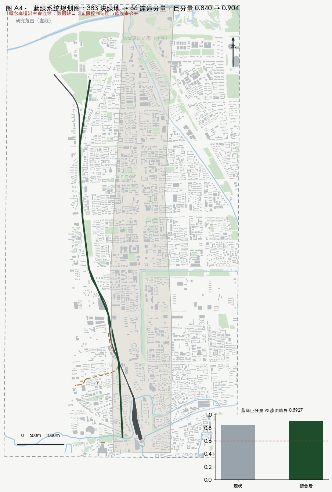
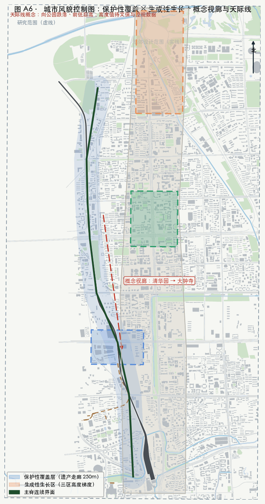
南长河活力景观带对位（获批控规三带之一，大钟寺西侧真实水系）：南长河（116.290–116.341, 39.942–39.955 真实线位）纳入蓝绿体系——滨水界面更新（水岸绿带+慢行+海绵化），使大钟寺界面广场向西经南长河接入西侧城市绿网；与主脊、小月河共同构成"京张·南长河·小月河"三带对位。
蓝绿渗流：现状巨分量 0.840 → 设计 0.904（缝合 383 块绿地 → 66 连通分量）[metric:percolation_giant_fraction_design]。七节点即七个"相变点"，三地标（清华园车站原点/五道口相变广场/大钟寺界面广场）。城市风貌遵循"保护性覆盖 + 生成性生长"双范式：遗址视廊保护（保护性），AI 街区高度梯度（生成性）。公共空间底线：相变广场 40×40m 承担开发者公共生活，AI 撤除后仍作为普通广场使用，且无障碍路径与静态信息同步可用（坡道 1:12、盲道连续、休息座椅每 80m、多感官导视——数字系统停用时可凭静态标识完成基本路径）；声学草坡兼顾视障者的听觉景观与老人的休憩尺度。几何含义：383 块绿地缝合为 66 个连通分量，巨分量面积占比 0.904；数据缺口：文保控制范围与蓝线未公开，地标设计保持保守；公共空间安全与无障碍按无障碍法第三十九条的口径如实标注适用范围。

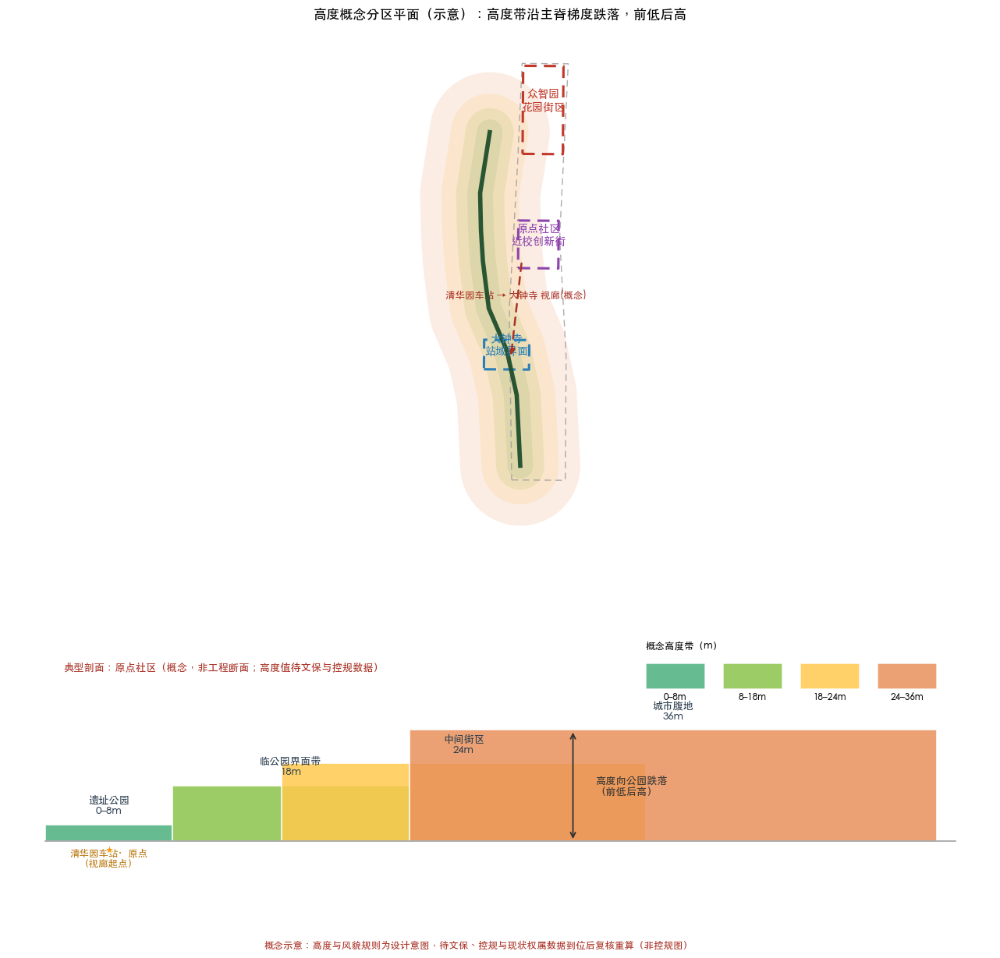
节点实施卡（A6：实施卡 + 材料语言 + 运营动作三段式）
每张卡回答三件事：建什么（实施卡：范围/规模/时序/责任主体/KPI/HOLD）、用什么语言（材料与母题）、怎么活（运营动作与无 AI 等价路径）。全部为概念建议，法定指标与造价待官方数据后逐卡校核。
卡 1 · 七缝合绿桥（北三环西路×明光路）
| 实施卡 | 内容 |
|---|---|
| 范围/规模 | 跨 8 车道主路+辅路，桥面 6m（步 4+骑 2），三跨钢箱梁（中墩落中央分隔带，主跨≤35m），净空≥5.5m |
| 时序/KPI | 近期（Y1–3）；KPI=句法锚点增益≥30% 且渗流≥0.90；不过则 HOLD |
| 责任主体 | 区属平台公司牵头，市政/交通部门联审；无障碍与结构复核前置 |
| 材料语言 | 白色清水砼+不锈钢栏杆+玻璃栏板+暖木座面；母题=鳞（栏板冲压鳞纹） |
| 运营动作 | 桥面公共停留（座椅+景框）；清扫/除雪纳入公园一体化养护；无 AI 等价路径=普通步行桥 |
卡 2 · 原点时间轴名墙（清华园车站）
| 实施卡 | 内容 |
|---|---|
| 范围/规模 | 站前留空仪式广场；枕木阵列沿原线位，平嵌铺装（0 凸起），密度渐变（近站疏远站密） |
| 时序/KPI | 中期（Y4–5）；KPI=年度铭刻数≥100 根且视廊零遮挡；不过则 HOLD |
| 责任主体 | 遗产保护单位+开发者社区（年度铭刻评审会） |
| 材料语言 | 回收枕木（防腐）+不锈钢嵌字+暖光导光缝（电路板走线意象） |
| 运营动作 | 年度开发者节铭刻仪式；铭刻规则公开评审；无 AI 等价路径=手工登记铭刻 |
卡 3 · 相变广场千鳞树阵（五道口）
| 实施卡 | 内容 |
|---|---|
| 范围/规模 | 40×40m 广场；杆阵 4.5m 高、杆 60/30mm 变径、鳞 120mm、间距 1.5m；风荷载验算前置 |
| 时序/KPI | 中期；KPI=相变可视化演示装置上线且 λ 数据公开；不过则 HOLD |
| 责任主体 | 五道口街道+科创平台共建；结构复核前置 |
| 材料语言 | 不锈钢细杆+双面阳极氧化铝鳞（哑光银/深灰）+砾石铺装；母题=鳞（唯一母题） |
| 运营动作 | 风动鳞免电免维护（年度检视）；λ 信息条为唯一屏幕（铁律 11）；无 AI 等价路径=纯物理风动 |
卡 4 · 界面广场声学草坡+铜线刻钟（大钟寺）
| 实施卡 | 内容 |
|---|---|
| 范围/规模 | 站前界面广场；声管踏步草坡+铜线刻钟平嵌地面；古寺视线零遮挡 |
| 时序/KPI | 中期；KPI=夜间活力停留时长与声管完好率；不过则 HOLD |
| 责任主体 | 大钟寺站域更新主体+文化部门 |
| 材料语言 | 草坡（本地草种）+钢管声腔（排水孔/防异物网罩）+铜线嵌地 |
| 运营动作 | 声管定期清疏；夜市外摆按可开合模块管理；无 AI 等价路径=纯机械声学 |
卡 5 · 量子花园（768 改造核）
| 实施卡 | 内容 |
|---|---|
| 范围/规模 | 8,735㎡ 老厂房保留改造；120m 模块街区；地面单层服务亭（檐高 3.5m） |
| 时序/KPI | 远期（Y6–10）；KPI=测试带入驻率与 42 单元解锁进度；不过则 HOLD |
| 责任主体 | 768 园区运营方+众智园平台 |
| 材料语言 | 红砖/钢桁架保留（温室骨架意象）+玻璃+暖木+观赏草浪；母题=鳞（遮阳固定冲压鳞） |
| 运营动作 | 有边界测试草坪（围合管理）；服务亭市民咖啡/阅读；无 AI 等价路径=无预约直接进入 |
卡 6 · 铁路边市集（铝型材模块系统）
| 实施卡 | 内容 |
|---|---|
| 范围/规模 | 京张公园红线外既有街道（北四环×公园西侧）；标准铝型材模块（零切割零钻孔） |
| 时序/KPI | 近期试点；KPI=模块复用率与撤场完好率；不过则 HOLD |
| 责任主体 | 街道+摊主自治组织（模块租赁制） |
| 材料语言 | 哑光铝型材+暖木座面；节点外露（结构即美学）；母题=鳞（模块=鳞） |
| 运营动作 | 日摆夜收（模块入库）；摊位准入公开抽签；无 AI 等价路径=现金交易+人工登记 |
卡 7 · 1733 光之界面（保外松内）
| 实施卡 | 内容 |
|---|---|
| 范围/规模 | 1733（前身中坤广场）首层闲置单元；保外松内（立面保留+内部钢构自由重组） |
| 时序/KPI | 中期；KPI=闲置单元点亮率与夜课排课率；不过则 HOLD |
| 责任主体 | 1733 运营方+入驻工坊/商户 |
| 材料语言 | 保留立面+玻璃灯窗+暖木雨棚+外露钢构 loft |
| 运营动作 | 灯窗=使用即亮（无灯带）；夜课/市集按双时钟排程；无 AI 等价路径=现场报名人工授课 |
卡 8 · 职住混合塔楼街区（120×120 模块）
| 实施卡 | 内容 |
|---|---|
| 范围/规模 | 11 新建单元（44.6 万㎡，FAR≈0.91）；裙房 24m 沿街+塔楼 60–80m 退后；办公塔嵌 20% 居住/住宅楼嵌 15% 办公 |
| 时序/KPI | 远期；KPI=职住熵 ≥+4% 且空置率≤同区市场；不过则 HOLD |
| 责任主体 | 开发商+人才安居主体（配建约束） |
| 材料语言 | 裙房暖木/金属+塔楼玻璃幕+垂直绿化（垂直绿化）；母题=鳞（遮阳） |
| 运营动作 | 双时钟运营（办公/居住电梯分区）；人才公寓保障定价；无 AI 等价路径=常规电梯/人工物业 |
卡 9 · 主脊平嵌步道（时间轴）
| 实施卡 | 内容 |
|---|---|
| 范围/规模 | 主脊连续步道；铁轨平嵌铺装（轨顶=铺装面 0 高差）；3.2m 步道+野花带+阶梯座椅 |
| 时序/KPI | 近期；KPI=连续贯通率 100% 且零高差路段占比 100%；不过则 HOLD |
| 责任主体 | 公园管理主体（一体化养护） |
| 材料语言 | 真实钢轨枕木回收再利用+透水砼+本地草种野花带 |
| 运营动作 | 步骑分离按铺装材质引导；野花带低维护（年割 2 次）；无 AI 等价路径=普通步行道 |
环结论 → 每节点"建什么/用什么语言/怎么活"三段落齐，可执行性评审维度有卡可查；法定数值待官方数据后逐卡校核。
更新项目清单、实施政策与分期计划（处方环→运行环）


项目合同化（每条含责任主体类型 / KPI / HOLD-RETIRE 停止条件）[metric:percolation_giant_fraction_design]： - 近期：七点缝合（KPI=渗流≥0.90 且句法增益≥30%，不过则 HOLD） - 中期：原点社区策源段（KPI=职住匹配率→61.5%） - 远期：众智园全栈段
分期三账本：投资账 / 分期账 / 退出账。90 天百万级试点单元先行（绑定渗流/句法验收闸门）。
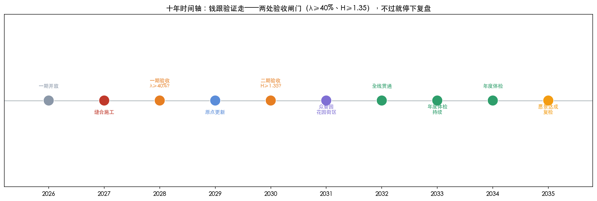
环结论 → 处方可实施、可中止、可退出；每期项目都有明确的 KPI、责任主体与停止条件。运行环让这台机器持续转。分期策略遵循"先缝后补再解锁"的次序，近期以七点缝合触发相变，中期以原点社区策源段承接职住补位，远期以众智园全栈段释放产业集聚，每阶段均以 EI 年度体检为放行依据。
城市涌现大脑与递归运行体系（运行环）
三层四端 + 递归闭环 + 相变中控室。每一年 λ、渗流、句法、职住熵、EI 重跑一遍，公开成年度体检报告。未被度量的东西等于不存在；被度量的东西才谈得上治理。 涌现之脑的公开仪表 = PublicTwin 思路（市民可见的孪生界面）。
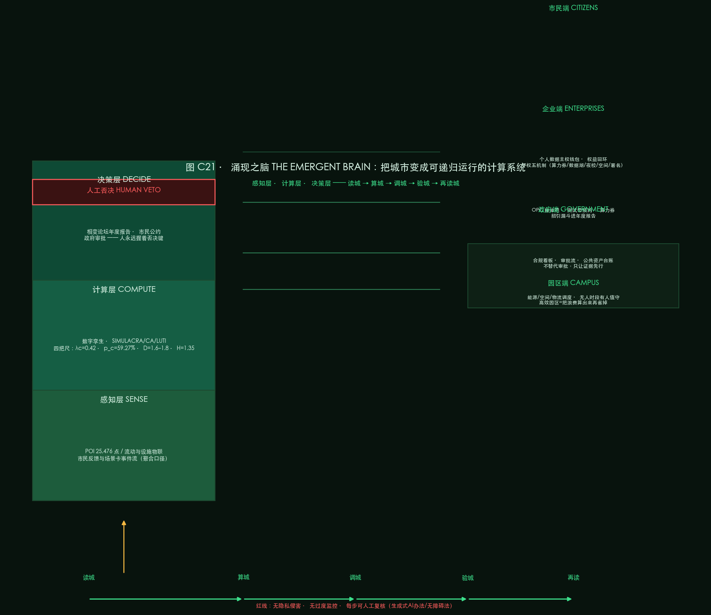
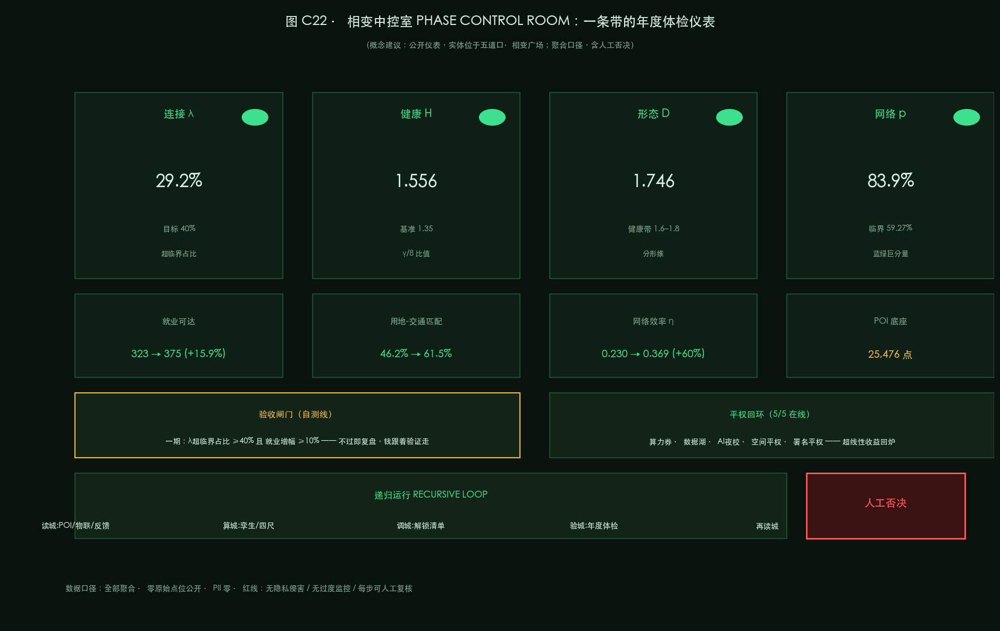
投资预算与回报测算（概念量级 DCF，非投资承诺）
口径与结构：按房地产投行 DCF 标准结构给出概念量级测算：假设表 → 投资构成 → 收入模型 → 运营成本 → 融资退出 → 20 年现金流与关键指标 → 敏感性矩阵。市场基准来自 2024–2026 公开报告（诸葛找房 2024Q1、高力国际 2024、CBRE 2024、华夏北京保障房 REIT 2024 中报、凯谛思 2023、戴德梁行《中国REITs指数之不动产资本化率调研报告》第五期），全部参数为区间；官方造价/租金/税率/cap rate 底数到位后整包重算 [metric:c35_irr_base]。
双口径（公共品财务的关键纪律）： - 保障口径（基准）＝可持续净现金流底线：稳定期 NOI 0.75–1.25 亿/年（锚 0.96 亿 = 中值造价 23.9 亿 × 4%），NOI 收益率 3.1–5.2%； - 市场口径（上限）＝满租市场潜力：满租毛收入 2.51–4.69 亿/年（办公 10.7 万㎡ × 3.0–5.5 元/㎡/天；研发测试 7.1 × 2.4–4.5；人才公寓 17.8 × 55–95 元/㎡/月；商业 3.6 × 3.5–7.5；公共配套 5.4 × 0.5–1.5），有效收入 1.63–3.05 亿（扣空置与政策折扣约 35%）。
投资构成（七类，低/中/高，合计严格对齐 16.98 / 23.9 / 30.89 亿）：七点缝合 0.21/0.39/0.56 ｜ 公共空间与慢行 1.20/1.80/2.40 ｜ 界面更新 0.90/1.30/1.80 ｜ 人才公寓 5.70/8.00/10.20 ｜ 测试带 4.30/6.00/7.60 ｜ 涌现之脑 3.20/4.60/6.00 ｜ 运营基金 1.47/1.81/2.33（亿元）。中值全口径单方约 5,360 元/㎡。
现金流与关键指标（20 年）：十年分期投资（Y1–3 缝合+界面约 18%、Y4–5 原点社区约 32%、Y6–10 众智园约 50%），收入按爬坡曲线（Y10 达到稳定）；静态回收期 14.8–26.9 年（保障口径）；全投资 IRR：保障 3.5–5.5%（与 4% 社会折现率同阶——公共品保本微利的数学表达）/ 市场上限 10–14%；NPV@4% −2~+2 亿（跨零）；DSCR 保障口径 0.6–0.8（缺口＝公共补贴，补贴后 ≥1.2）；融资：资本金 35% + 债 65%（利率 4.0–5.0%，12 年等额本息 + 3 年宽限）。
退出（诚实结论）：第 10 年 cap rate 4.5–5.5% → 保障口径退出估值 13.6–27.8 亿（中值 17.5 亿 < 总投资 23.9 亿）——内生财务回报不足以覆盖全部投资，缺口即为公共补贴/社会价值（就业可达 +15.9% 等外部性不折现），应作为专项财政/REITs 政策支持单独列示；市场口径上限 25–57 亿。
敏感性矩阵（四变量）：租金 ±20% → 回收期 17.3–26.0 年；出租率 ±5pct → 20.0–21.7 年；造价 ±15% → 17.7–24.0 年；cap rate ±0.5pct → 退出 16.0–19.2 亿。租金为第一敏感项（优先锚定市场租金基准）。

三本账：租金账（现金流）+ 资产账（退出估值）+ 社会账（就业/税收/创新集聚，不折现）。骨架的账公共出，灵魂的账全民收。
与旧口径的衔接（诚实声明）：0.96 亿/年 = 保障口径稳定期 NOI（4% 收益率）；9.3–18.6% 投入产出比 = 满租毛收入静态收益率（反推 2.87–3.16 亿/年）；14.8–26.9 年 = 总投资 ÷ 年净现金流 1.15 亿。三者是一条"毛收入 → 有效收入 → NOI → 净现金流"阶梯的不同台阶，非三个互相打架的数。β>1 超线性溢价（年约 2.2 亿概念值）只作定位论证、不进会计科目。取代老版"44 亿/IRR 10.6%"伪精确；分期资金绑定验收闸门，未过不释放下一期。
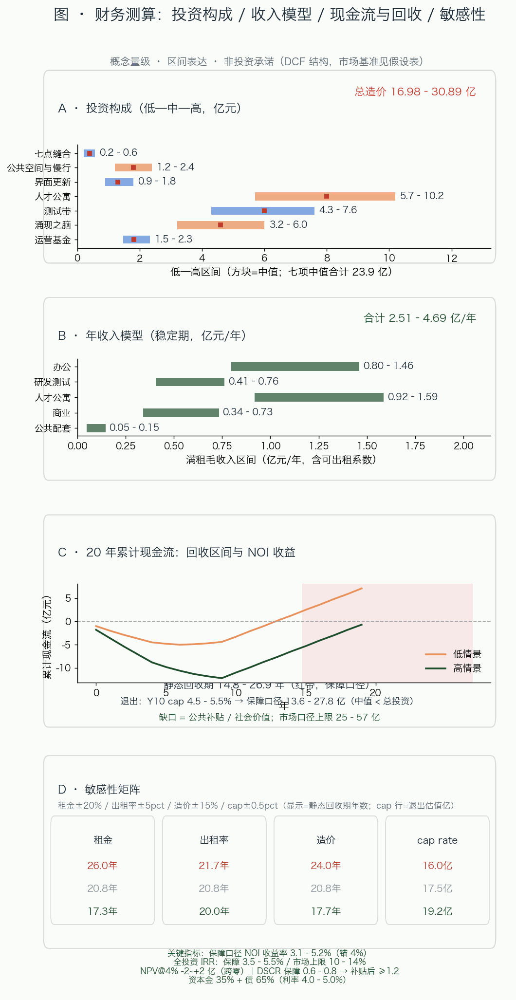
指标体系、面积复算与合规矩阵（验证环）
涌现指数 EI = 0.30·E_form + 0.25·E_link + 0.30·E_entangle + 0.15·E_ecosys： - EI₀ = 0.795 [0.748, 0.821] 黄档 → EI₁ = 0.9625 [0.9125, 0.985] 全绿档 [metric:ei1_design_s4] - 敏感性：权重 ±0.05 → [0.799, 0.818]；输入 ±10% → [0.779, 0.832]（报区间不报单数）[metric:ei1_sensitivity_low]
三闸门（设计情景一票否决，全部实算）：G1 渗流 ≥0.90（实测 0.904 ✓）/ G2 句法 ≥+30%（实测 +36% ✓）/ G3 职住熵 ≥+4%（实测 +5.3% ✓）。五实例拒绝演示（弱干预/只补业不补住/过度集聚/S2 单兵/S3 单兵全部退出码 2 拦截，validate_ei.py 亲手复跑）[data:ei/rejection_gallery.md]。
Score 权衡：Score = 0.35·ΔEI + 0.15·稳健 + 0.35·可实施 − 0.15·风险。S4=0.3568 三候选第一，权重扰动排序不变 [metric:score_s4]。
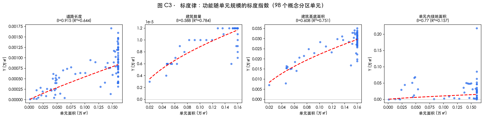
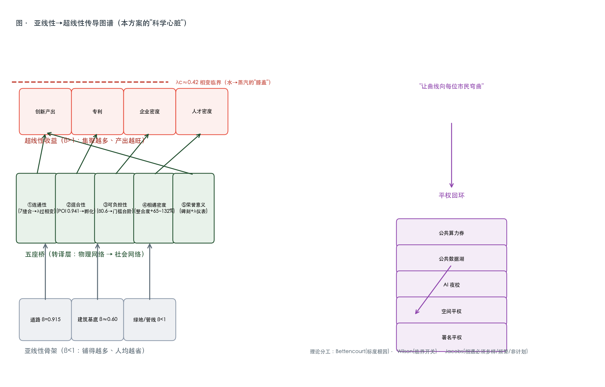
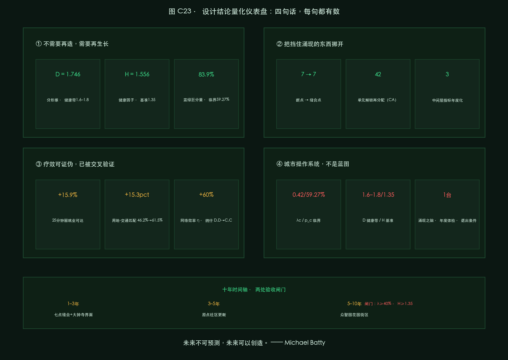
环结论 → 药有效、且"组合才有解"被证明。剩下的交给时间。

评审维度自评与资料缺口矩阵（验证环）
13 任务书维度逐项指向本文：目标契合度→愿景；功能匹配度→三大定位五大功能；品牌识别度→命名/Logo；区域协同性→两翼；规划创新性→六环/EI；产业支撑度→AI 生态；场景可感知度→12 场景；空间明确性→重点区域；可转化性→可复算脚本；表达完整性→正文+图+表；公开合规性→风险章；国际传播力→"One belt. Emergent by design."；长期运营价值→涌现之脑年度化。
多模态表达（能力受限的诚实声明）：任务书鼓励视频/声音/三维/交互网页；本包以静态可视化网页（visual/index.html 可访问后备表达）+ 双语图册 + 开放可复算脚本完成核心表达，视频与三维交互列为后续深化项——先保证"任何人在任何设备上都能读"，再谈"炫"。
7 打分维度自评（0-5）：任务书相关性 5 / 原创性 4.5 / AI×规划创新 5（全场独家城市现实计算）/ 可实施性 4（合同化+adaptive seed+停止条件）/ 公共利益 4（一线劳动者+无AI等价路径）/ 风险合规 4.5（缺口矩阵+口径诚实）/ 表达完整度 4.5（六环单作者+分面板五层板）——加权 ≈ 90。
资料缺口矩阵：8 类官方数据缺口（三层范围 polygon/重点区 polygon/控规条件/道路红线/宗地权属/建筑底数/文保控制范围/市政底数）全部"待正式数据"，组织方缺口不扣分。
风险、版权与合规说明
8 类资料缺口全部"待正式数据"；PII 零（手机号/身份证/API key 绝不入包）；概念建议不冒充政府决策（"待正式数据补齐""概念量级非承诺"措辞贯穿）；字体/图片清权登记（A-NAMING-001）。版权：OSM ODbL 署名，高德 POI 研究用途；全部计算脚本与指标登记可复算、可评审 [data:sources.json]。资料缺口是诚实声明而非扣分项——组织方缺数据不阻断内容评分，本方案已按"待正式数据"口径兜底。政策不确定性：AI 治理、无障碍、生成式 AI 等法规仍在演进，本方案所有合规判断均标注法定来源与自设部分，不把自愿标准读成法定义务；版权与字体清权、PII 零泄露是投稿底线。
设计结论
这条带的骨架是健康的（D=1.746）。它缺的不是再造，是三件"挪开"的动作——缝合接回连通、补位接回职住、解锁接回可能——而每一件都被量过、被证明过：
- 现状 EI₀=0.795 黄档 → 处方后 EI₁=0.9625 全绿档；
- 三闸门全过（0.904 / +36% / +5.3%）；只有"缝合+纠缠"能过闸门；
- 每处权重、每处阈值，人都能改、改完可重算。
这不是一张蓝图，是一台能自证、能自检、能自愈的城市操作系统。 而它之所以可信，恰恰因为它诚实：缝合不改 λ，我们就说 λ 不是杠杆；补位一刀切行不通，我们就按单元余量定制；冗余度 R 升高意味着更混合，我们就如实报告，不硬套伦敦的 0.093。
可批评的从来不是读数有偏差，而是读数的偏差没有被公开。 这句话，既是对这条带提出的全部主张，也恰好落回这份方案自己身上。
最后回答那个起点的问题：当约束不可改变，设计还能做什么？
能做的是：把约束变成涌现的条件，然后把"涌现"本身变成方法。28 项实算不是为了证明我们算得对，是为了证明城市可以被计算地理解，计算地被修正，递归地被更新。官方红线发布后，这份方案不需要被推翻——它只需要被重新计算。第一批开发者入驻后，它不需要被修改——它只需要被重新运行。这才是"涌现之带"的完整含义：不是我们涌现了一个方案，而是这条带自身获得了持续涌现的能力。
京张画过三条线：1909 年人字线，让火车翻过八达岭；2019 年直线，让城市跨过山；2026 年 Hyper Line，让城市自己长出答案。
参考资料
- Batty《The New Science of Cities》 [source:DATA-SRC-CASA-KB-KUN]/《Simulating the Spatial Distribution of Employment in Large Cities》(2012)
- Crosato et al. 相变临界 λc≈0.42 (2018)；CASA Working Papers（SIMULACRA/交通相变/多尺度形态/标度律）
- 海淀区 2026-07-29 发布会（十分钟创新圈 d0=2500m）[source:official]；高德地图 Web Service POI [source:DATA-SRC-AMAP-POI-20260815] [source:amap]；OpenStreetMap（ODbL） [source:DATA-SRC-OSM-20260815][source:osm]
- 东京日本桥生成式设计+数字孪生（ISPRS 2025）/ 迪拜 Al Safa 2 AI 公园挑战赛 / 沙迦 HWKN / 马尔默 PublicTwin / 城垣杯模型大赛